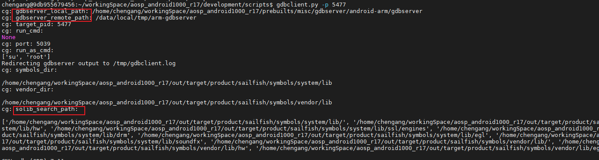
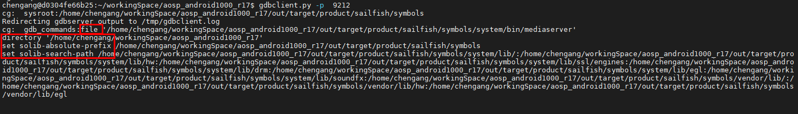
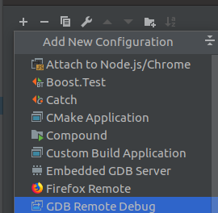
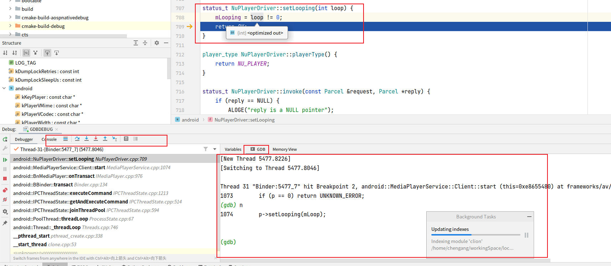
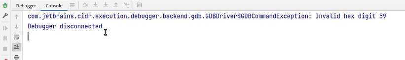
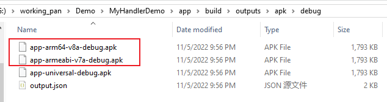
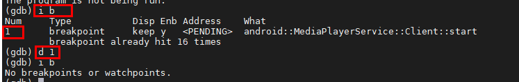
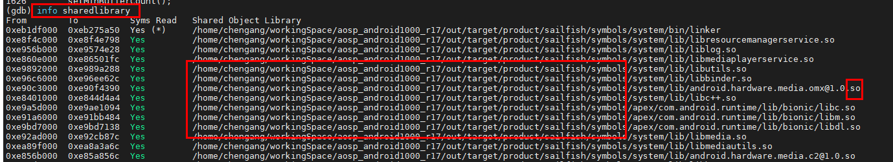

1. 目录
2. 本地GDB调试-------linux
2.1. 本地GDB调试结构
图：https://zhuanlan.zhihu.com/p/336922639
2.2. 步骤：
symbol-file /usr/lib64/libkwin.so.5
技巧之，利用gdb查找调用栈 --------> 环境里看调用
添加符号：
symbol-file /usr/lib64/libkwin.so.5
add-symbol-file /usr/lib64/plugins/kwin/effects/plugins/kwin4_effect_shapecorners.so
add-symbol-file /usr/lib64/plugins/kwin/effects/configs/kwin_shapecorners_config.so
add-symbol-file /usr/lib64/libwayland-server.so.0
add-symbol-file /usr/lib64/libkwin.so.5
-----------------------> 后面需要用add-symbol-file
// 查看结果
(gdb) info sharedlibrary
------------------> TODO:
添加断点：
b Shadow::init
b ShapeCornersShader::Bind
attach进程：
ps -ef | grep wayland
635 kde 20 0 898M 104M 77M S 9.0 4.1 0:28.27 kwin_wayland --wayland-fd 8 --socket wayland-0
(gdb) attach 635
方式一：
so里已经有行号信息了。这时候需要指定源码：
运行中指定源码路径：
(gdb) dir ./temp
Thread 1 "kwin_wayland" hit Breakpoint 3, ShapeCornersShader::Bind (this=0x556df6e2a8, w=0x556de3cf90, scale=1, isTiled=72) at /usr/src/debug/KDE-Rounded-Corners/1.0-r0/git/src/ShapeCornersShader.cpp:54
54 /usr/src/debug/KDE-Rounded-Corners/1.0-r0/git/src/ShapeCornersShader.cpp: No such file or directory.
2.3. 补充 控制
继续执行到下一个断点-continue
(gdb)c
(gdb)c 3 #跳过三次断点
继续运行到指定位置-until
(gdb)u 29 #运行到29行停住，利用的是临时断点
2.4. 编译带调试信息的程序 或 so
在编译程序时，需要使用-g选项来添加调试信息。
2.4.1. gcc直接编译
gcc -g main.c xxx
2.4.2. cmake
cmake编译时，添加参数
set(CMAKE_CXX_FLAGS "${CMAKE_CXX_FLAGS} -g -O0")
set(CMAKE_C_FLAGS "${CMAKE_C_FLAGS} -g -O0")
// -g 选项告诉编译器生成调试信息
// -O0 选项告诉编译器禁用所有优化
2.4.3. meson.build 编译
W:\workingspace\frameworks\window\windowmanager\weston\meson.build
add_project_arguments(global_args, language: 'c')
#add by cg
add_global_arguments('-O0', language: 'c')
add_global_arguments('-g', language: 'c')
2.5. 源码环境中如何找符号表？
万能的暴力方法：
在根目录下，暴力find_ -----------> 最大的so，就是符号表！！！！
find_ ./ libwayland-server.so.0.21.0注意：我们很难确定 目标so 是不是某个模块编译出来的：
即使 bitebake kwin后，发现kwin下有 --------> 实际上是因为kwin依赖，编译时copy过来的
最后验证：
$ file ./1.21.0-r0/image/usr/lib64/libwayland-server.so.0.21.0
./1.21.0-r0/image/usr/lib64/libwayland-server.so.0.21.0: ELF 64-bit LSB shared object, ARM aarch64, version 1 (SYSV), dynamically linked, with debug_info, not stripped ---> 没有strip
一般情况下：
工程里，一定会有 中间产物 符号表
2.5.1. 符号表的可替换性
#6 0x0000007f97e8c6a8 in ?? () from /usr/lib64/libwayland-server.so.0
#7 0x0000007f97e8743c in ?? () from /usr/lib64/libwayland-server.so.0 // ?? 代表不含符号表！！！！！！
用一个含符号表的 libwayland-server.so.0文件，可以直接替换 上述系统文件
-------------------->
1、系统可以正常运行！！！！
2、利于GDB 的debug
2.6. 引入符号表 TODO
symbol-file /usr/lib64/libkwin.so.5 add-symbol-file /usr/lib64/plugins/kwin/effects/plugins/kwin4_effect_shapecorners.so add-symbol-file /usr/lib64/plugins/kwin/effects/configs/kwin_shapecorners_config.so
sysroot GDB中set sysroot作用是什么 (gdb) show sysroot ---------> https://chat.openai.com/c/dae87696-c095-44b3-85cd-8b7fbfb93357
2.7. 引入文件
gdb报错：
KWin::Window::updateShadow (this=this@entry=0x55958cb570) at /usr/src/debug/kwin/5.27.4-r0/kwin-5.27.4/src/window.cpp:439
439 /usr/src/debug/kwin/5.27.4-r0/kwin-5.27.4/src/window.cpp: No such file or directory. // 【】提示需要新增源文件
(gdb) l
方法：
adb push \kwin\\5.27.4-r0\\kwin-5.27.4\\src /usr/src/debug/kwin/5.27.4-r0/kwin-5.27.4/ adb push \KDE-Rounded-Corners\\1.0-r0\\git\\src /usr/src/debug/KDE-Rounded-Corners/1.0-r0/git/
新增源文件的好处：
b KWin::WorkspaceSceneOpenGL::createShadow 即使无法找到符号表，也可以在.cpp中断点
3. 远程GDB调试-----安卓
TODO：安卓为啥不能本地调试？必须 server + gdb
3.1. 远程GDB的结构
GDB与GdbServer之间联系：
通过网络或者串口进行通讯 ---------> TODO：所以，不需要adb？？？？
参考：https://zhuanlan.zhihu.com/p/336922639 原来gdb的底层调试原理这么简单
TODO：
GDB如何调试已经执行的服务进程？ https://zhuanlan.zhihu.com/p/336922639
偷窥GDB如何实现断点指令？ https://zhuanlan.zhihu.com/p/336922639
偷窥GDB如何实现单步指令next？ https://zhuanlan.zhihu.com/p/336922639
3.2. framework Native 断点调试 环境（GDB）
參考:
https://blog.csdn.net/weixin_34419326/article/details/90306477 GDB在线调试Android Framework Native C/C++代码 -------------> 好文
使用调试程序 | Android 开源项目 | Android Open Source Project (google.cn)
见下面 法一、法二、法三
3.3. 法一：gdbclient.py方法步骤（优秀）
linux下 gdbclient.py ---> GOOGLE封装好的断点脚本
（GOOGLE放弃了 gdbclient，主要使用gdbclient.py）
/home/cg/workingSpace/aosp_android1000_r17/development/scripts/gdbclient.py
/gdbclient
3.3.1. docker容器（linux）与手机adb 连接
见《docker连 主机pc连的安卓设备》
即：
宿主windows侧：
adbkit usb-device-to-tcp -p 7788 FA6930305260
docker容器一侧
adb connect host.docker.internal:7788
TODO：这一步是必要的 ：GDB与GdbServer之间是网络连接，但是脚本里有用到adb
3.3.2. linux初始化 gdbclient.py 环境
# 运行shell脚本，配置环境
$ source build/envsetup.sh
# 然后选择自己要调试的编译版本
$ lunch aosp_sailfish-userdebug
--->作用： gdbclient.py 在根目录下，可以索引到所有变量，比如gdb、gdbclient等
3.3.3. gdbserver/gdbserver64提供服务
gdbserver（和gdbserver64）环境的准备： 是push进手机里的
自然，windows侧：adb push G:\dockerSharedFiles\aosp_android1000_r17\aosp_android1000_r17\prebuilts\misc\gdbserver\android-arm64\gdbserver64 /system/bin/ adb push G:\dockerSharedFiles\aosp_android1000_r17\aosp_android1000_r17\prebuilts\misc\gdbserver\android-arm64\gdbserver /system/bin/ // ----------> 似乎主要是gdbserver？gdbclient 在linux里，google封装的gdbclient.py
这里采用网络来搭建linux与手机之间的桥梁，所以用ip：（而不是，端口转发adb forward）
adb root
adb remount // ----------> 注意：需要这个！！！【】 后续GDB会copy东西给GDBserver
adb shell ps -ef | grep mediaserver
adb shell gdbserver :12345 --attach pid 或 gdbserver64 // 待调试的pid
-要点：
手机内部使用 gdbserver， 用gdbserver64导入符号表不生效。而使用 gdbserver64， linux侧显示找不到符号表 自然，我们set solib-search-path /home/chen/workingSpace/aosp_android1000_r17/out/target/product/sailfish/symbols/system/lib/ ------> 用的lib TODO：怎么确定手机里到底用的是lib还是lib64？ gdbserver64+ lib64组合会怎么样？
补充：
gdbserver :12345 --attach pid
gdbserver 192.168.1.0:12345 --attach pid // ip是server的ip。不是必须项
程序未启动时：
gdbserver [设备ip]:[端口] [需要运行的程序]$
gdbserver 192.168.1.0:8000 test
3.3.4. gdbserver 与 gdbclient 网络链接---端口转发方式（优）
手机侧：
adb forward tcp:1235 tcp:1235 && adb shell gdbserver :1235 --attach pid
------------------------> 技巧：
虽然命令是执行的手机侧命令，也可以直接在linux侧执行（因为docker容器（linux）已经与手机adb 连接 ）
linux侧： gdbclient.py默认不指定ip：
gdb.execute("target extended-remote " + target)gdbclient.py --port 1235 -p 864
优：
1、不需要两个设备连同一局域网
2、不需要修改 修改gdbclient.py （指定手机ip）
3.3.5. gdbserver 与 gdbclient 网络链接---局域网指定ip方法（次要）
网络环境准备：
1、手机、linux连同一局域网
2、linux可以ping手机ip
-修改gdbclient.py 中连接remote方式，指定手机ip：
#gdb.execute("target extended-remote " + target) ------> 修改为：gdb.execute("target remote 192.168.1.6" + target)
启动gdbclient.py （封装了先启动gdbserver，后gdbclient），命令：
gdbclient.py --port 12345 -p PID
其中，进程PID获取：
adb shell ps -ef | grep mediaserver

3.3.6. GDB操作
1、设置断点：
(gdb) b android::MediaPlayerService::Client::start
(gdb) b frameworks/av/media/libmediaplayerservice/MediaPlayerService.cpp:1072
2、设置continue：(gdb) c ------------> 必须设置，不然进程会卡主
3、操作手机：
android::MediaPlayerService::Client::start 触发点：设置 ------- 声音 -------- 媒体音量
然后就断点住了
3.3.7. 判断是否环境OK
(gdb) info shared
标准: 显示共享库 -----------> 看是否有结果
lib
(gdb) info shared
From To Syms Read Shared Object Library
0xef8bb000 0xef951a50 Yes (*) /home/chen/workingSpace/aosp_android1000_r17/out/target/product/sailfish/symbols/system/bin/linker
0xef03a000 0xef06262c Yes /home/chen/workingSpace/aosp_android1000_r17/out/target/product/sailfish/symbols/system/lib/libbinder.so
0xeea59000 0xeea62e28 Yes /home/chen/workingSpace/aosp_android1000_r17/out/target/product/sailfish/symbols/system/lib/liblog.so
0xef09c000 0xef0abb70 Yes /home/chen/workingSpace/aosp_android1000_r17/out/target/product/sailfish/symbols/system/lib/libmediadrm.so
0xee95a000 0xee962288 Yes /home/chen/workingSpace/aosp_android1000_r17/out/target/product/sailfish/symbols/system/lib/libutils.so
0xeee02000 0xeee4a984 Yes /home/chen/workingSpace/aosp_android1000_r17/out/target/product/sailfish/symbols/system/lib/libhidlbase.so
0xeeae8000 0xeeae8b78 Yes /home/chen/workingSpace/aosp_android1000_r17/out/target/product/sailfish/symbols/system/lib/libhidlmemory.so
0xeea29000 0xeea290bc Yes /home/chen/workingSpace/aosp_android1000_r17/out/target/product/sailfish/symbols/system/lib/libhidltransport.so
0xef340000 0xef36ea70 Yes /home/chen/workingSpace/aosp_android1000_r17/out/target/product/sailfish/symbols/system/lib/android.hardware.drm@1.0.so
0xef1de000 0xef1f87e8 Yes /home/chen/workingSpace/aosp_android1000_r17/out/target/product/sailfish/symbols/system/lib/android.hardware.drm@1.1.so
0xeef38000 0xeef5ffb0 Yes /home/chen/workingSpace/aosp_android1000_r17/out/target/product/sailfish/symbols/system/lib/android.hardware.drm@1.2.so
0xef0fd000 0xef1494a4 Yes /home/chen/workingSpace/aosp_android1000_r17/out/target/product/sailfish/symbols/system/lib/libc++.so
0xeebd5000 0xeec59094 Yes /home/chen/workingSpace/aosp_android1000_r17/out/target/product/sailfish/symbols/apex/com.android.runtime/lib/bionic/libc.so
0xef198000 0xef1ad484 Yes /home/chen/workingSpace/aosp_android1000_r17/out/target/product/sailfish/symbols/apex/com.android.runtime/lib/bionic/libm.so
0xef24e000 0xef24e138 Yes /home/chen/workingSpace/aosp_android1000_r17/out/target/product/sailfish/symbols/apex/com.android.runtime/lib/bionic/libdl.so
0xeed86000 0xeed8c5c0 Yes /home/chen/workingSpace/aosp_android1000_r17/out/target/product/sailfish/symbols/system/lib/libbase.so
0xee9dd000 0xee9e2128 Yes /home/chen/workingSpace/aosp_android1000_r17/out/target/product/sailfish/symbols/system/lib/libcutils.so
0xeeb1c000 0xeeb1cc58 Yes /home/chen/workingSpace/aosp_android1000_r17/out/target/product/sailfish/symbols/system/lib/libbinderthreadstate.so
0xef2ee000 0xef2f9544 Yes /home/chen/workingSpace/aosp_android1000_r17/out/target/product/sailfish/symbols/system/lib/libmediadrmmetrics_lite.so
0xee8d4000 0xee8d6c34 Yes /home/chen/workingSpace/aosp_android1000_r17/out/target/product/sailfish/symbols/system/lib/libmediametrics.so
0xeefe4000 0xeefe8a6c Yes /home/chen/workingSpace/aosp_android1000_r17/out/target/product/sailfish/symbols/system/lib/libmediautils.so
0xeefa2000 0xeefaef74 Yes /home/chen/workingSpace/aosp_android1000_r17/out/target/product/sailfish/symbols/system/lib/libstagefright_foundation.so
0xef426000 0xef426160 Yes /home/chen/workingSpace/aosp_android1000_r17/out/target/product/sailfish/symbols/system/lib/libhidlallocatorutils.so
0xef3dd000 0xef3f5760 Yes /home/chen/workingSpace/aosp_android1000_r17/out/target/product/sailfish/symbols/system/lib/libprocessgroup.so
0xef388000 0xef388218 Yes /home/chen/workingSpace/aosp_android1000_r17/out/target/product/sailfish/symbols/system/lib/libvndksupport.so
0xeed3a000 0xeed3a0bc Yes /home/chen/workingSpace/aosp_android1000_r17/out/target/product/sailfish/symbols/system/lib/libhwbinder.so
0xeeb4f000 0xeeb5b22c Yes /home/chen/workingSpace/aosp_android1000_r17/out/target/product/sailfish/symbols/system/lib/android.hidl.memory@1.0.so
0xee98f000 0xee994524 Yes /home/chen/workingSpace/aosp_android1000_r17/out/target/product/sailfish/symbols/system/lib/android.hidl.memory.token@1.0.so
0xef299000 0xef2afaf0 Yes /home/chen/workingSpace/aosp_android1000_r17/out/target/product/sailfish/symbols/system/lib/libprotobuf-cpp-lite.so
0xeeee2000 0xeeef22e8 Yes /home/chen/workingSpace/aosp_android1000_r17/out/target/product/sailfish/symbols/system/lib/libmemunreachable.so
0xeee97000 0xeeeaf408 Yes /home/chen/workingSpace/aosp_android1000_r17/out/target/product/sailfish/symbols/system/lib/android.hardware.graphics.bufferqueue@1.0.so
0xef219000 0xef2198e8 Yes /home/chen/workingSpace/aosp_android1000_r17/out/target/product/sailfish/symbols/system/lib/android.hidl.token@1.0-utils.so
0xeecc9000 0xeecc9874 Yes /home/chen/workingSpace/aosp_android1000_r17/out/target/product/sailfish/symbols/system/lib/libcgrouprc.so
0xeec93000 0xeec9305a Yes /home/chen/workingSpace/aosp_android1000_r17/out/target/product/sailfish/symbols/system/lib/libdl_android.so
0xeeaba000 0xeeaba0bc Yes /home/chen/workingSpace/aosp_android1000_r17/out/target/product/sailfis---Type <return> to continue, or q <return> to quit---
h/symbols/system/lib/android.hardware.graphics.common@1.0.so
0xeed4f000 0xeed4f0dc Yes /home/chen/workingSpace/aosp_android1000_r17/out/target/product/sailfish/symbols/system/lib/android.hardware.media@1.0.so
0xee935000 0xee93bdc4 Yes /home/chen/workingSpace/aosp_android1000_r17/out/target/product/sailfish/symbols/system/lib/android.hidl.token@1.0.so
0xee8a2000 0xee8a3410 Yes /home/chen/workingSpace/aosp_android1000_r17/out/target/product/sailfish/symbols/system/lib/libnetd_client.so
lib64
(gdb) info share
From To Syms Read Shared Object Library
0x00000079db618000 0x00000079db6e9528 Yes (*) /home/chen/workingSpace/aosp_android1000_r17/out/target/product/sailfish/symbols/system/bin/linker64
0x00000079d93c8000 0x00000079d94cfdac Yes /home/chen/workingSpace/aosp_android1000_r17/out/target/product/sailfish/symbols/system/lib64/libandroid_runtime.so
0x00000079d686c000 0x00000079d68a903c Yes /home/chen/workingSpace/aosp_android1000_r17/out/target/product/sailfish/symbols/system/lib64/libbinder.so
0x00000079d6633000 0x00000079d663a7a4 Yes /home/chen/workingSpace/aosp_android1000_r17/out/target/product/sailfish/symbols/system/lib64/libcutils.so
0x00000079d8e45000 0x00000079d8eaa4e4 Yes /home/chen/workingSpace/aosp_android1000_r17/out/target/product/sailfish/symbols/system/lib64/libhidlbase.so
0x00000079d6daa000 0x00000079d6db7510 Yes /home/chen/workingSpace/aosp_android1000_r17/out/target/product/sailfish/symbols/system/lib64/liblog.so
0x00000079d609a000 0x00000079d60a5944 Yes /home/chen/workingSpace/aosp_android1000_r17/out/target/product/sailfish/symbols/system/lib64/libutils.so
0x00000079d6717000 0x00000079d67365c4 Yes /home/chen/workingSpace/aosp_android1000_r17/out/target/product/sailfish/symbols/system/lib64/libwilhelm.so
0x00000079d5f97000 0x00000079d60078b0 Yes /home/chen/workingSpace/aosp_android1000_r17/out/target/product/sailfish/symbols/system/lib64/libc++.so
0x00000079d83cb000 0x00000079d847205c Yes /home/chen/workingSpace/aosp_android1000_r17/out/target/product/sailfish/symbols/apex/com.android.runtime/lib64/bionic/libc.so
0x00000079d7d19000 0x00000079d7d3c470 Yes /home/chen/workingSpace/aosp_android1000_r17/out/target/product/sailfish/symbols/apex/com.android.runtime/lib64/bionic/libm.so
0x00000079d8a53000 0x00000079d8a531cc Yes /home/chen/workingSpace/aosp_android1000_r17/out/target/product/sailfish/symbols/apex/com.android.runtime/lib64/bionic/libdl.so
0x00000079d8ee2000 0x00000079d8ee90b4 Yes /home/chen/workingSpace/aosp_android1000_r17/out/target/product/sailfish/symbols/system/lib64/libbpf_android.so
0x00000079d5c62000 0x00000079d5c66fe8 Yes /home/chen/workingSpace/aosp_android1000_r17/out/target/product/sailfish/symbols/system/lib64/libnetdbpf.so
0x00000079d92a9000 0x00000079d92b1bbc Yes /home/chen/workingSpace/aosp_android1000_r17/out/target/product/sailfish/symbols/system/lib64/libnetdutils.so
0x00000079d8cb4000 0x00000079d8cb4e00 Yes /home/chen/workingSpace/aosp_android1000_r17/out/target/product/sailfish/symbols/system/lib64/libmemtrack.so
0x00000079d89be000 0x00000079d89f1e98 Yes /home/chen/workingSpace/aosp_android1000_r17/out/target/product/sailfish/symbols/system/lib64/libandroidfw.so
0x00000079d71d8000 0x00000079d71ddafc Yes /home/chen/workingSpace/aosp_android1000_r17/out/target/product/sailfish/symbols/system/lib64/libappfuse.so
0x00000079d7fee000 0x00000079d7ff5ef8 Yes /home/chen/workingSpace/aosp_android1000_r17/out/target/product/sailfish/symbols/system/lib64/libbase.so
0x00000079d6a76000 0x00000079d6b205c4 Yes /home/chen/workingSpace/aosp_android1000_r17/out/target/product/sailfish/symbols/system/lib64/libcrypto.so
0x00000079d6968000 0x00000079d6969a60 Yes /home/chen/workingSpace/aosp_android1000_r17/out/target/product/sailfish/symbols/system/lib64/libdebuggerd_client.so
0x00000079d6fdd000 0x00000079d6ff1150 Yes /home/chen/workingSpace/aosp_android1000_r17/out/target/product/sailfish/symbols/system/lib64/libui.so
0x00000079d5c26000 0x00000079d5c2a030 Yes /home/chen/workingSpace/aosp_android1000_r17/out/target/product/sailfish/symbols/system/lib64/libgraphicsenv.so
0x00000079d5cf8000 0x00000079d5d5b144 Yes /home/chen/workingSpace/aosp_android1000_r17/out/target/product/sailfish/symbols/system/lib64/libgui.so
0x00000079d8356000 0x00000079d835c50c Yes /home/chen/workingSpace/aosp_android1000_r17/out/target/product/sailfish/symbols/system/lib64/libsensor.so
0x00000079d6163000 0x00000079d6177fb8 Yes /home/chen/workingSpace/aosp_android1000_r17/out/target/product/sailfish/symbols/system/lib64/libinput.so
0x00000079d61b0000 0x00000079d61e9994 Yes /home/chen/workingSpace/aosp_android1000_r17/out/target/product/sailfish/symbols/system/lib64/libcamera_client.so
0x00000079d90ef000 0x00000079d90f1f6c Yes /home/chen/workingSpace/aosp_android1000_r17/out/target/product/sailfish/symbols/system/lib64/libcamera_metadata.so
0x00000079d5aed000 0x00000079d5be4d9c Yes /home/chen/workingSpace/aosp_android1000_r17/out/target/product/sailfish/symbols/system/lib64/libsqlite.so
0x00000079d7194000 0x00000079d71aae50 Yes /home/chen/workingSpace/aosp_android1000_r17/out/target/product/sailfish/symbols/system/lib64/libEGL.so
0x00000079d8b64000 0x00000079d8b659f8 Yes /home/chen/workingSpace/aosp_android1000_r17/out/target/product/sailfish/symbols/system/lib64/libGLESv1_CM.so
0x00000079d68f4000 0x00000079d68f910c Yes /home/chen/workingSpace/aosp_android1000_r17/out/target/product/sailfish/symbols/system/lib64/libGLESv2.so
0x00000079d5a6f000 0x00000079d5a7410c Yes /home/chen/workingSpace/aosp_android1000_r17/out/target/product/sailfish/symbols/system/lib64/libGLESv3.so
0x00000079d69d2000 0x00000079d69e5f3c Yes /home/chen/workingSpace/aosp_android1000_r17/out/target/product/sailfish/symbols/system/lib64/libvulkan.so
0x00000079d65af000 0x00000079d65b63ec Yes /home/chen/workingSpace/aosp_android1000_r17/out/target/product/sailfish/symbols/system/lib64/libziparchive.so
0x00000079d8f9c000 0x00000079d8f9d6e4 Yes /home/chen/workingSpace/aosp_android1000_r17/out/target/product/sailfish/symbols/system/lib64/libETC1.so
0x00000079d890b000 0x00000079d890b610 Yes /home/chen/workingSpace/aosp_android1000_r17/out/target/product/sailfish/symbols/system/lib64/libhardware.so
0x00000079d7261000 0x00000079d7262874 Yes /home/chen/workingSpace/aosp_android1000_r17/out/target/product/sailfish/symbols/system/lib64/libhardware_legacy.so
0x00000079d8122000 0x00000079d8131030 Yes /home/chen/workingSpace/aosp_android1000_r17/out/target/product/sailfish/symbols/system/lib64/libselinux.so
0x00000079d804f000 0x00000079d80a208c Yes /home/chen/workingSpace/aosp_android1000_r17/out/target/product/sailfish/symbols/system/lib64/libmedia.so
0x00000079d8b2e000 0x00000079d8b37d68 Yes /home/chen/workingSpace/aosp_android1000_r17/out/target/product/sailfish/symbols/system/lib64/libmedia_helper.so
0x00000079d65ed000 0x00000079d65f2f48 Yes /home/chen/workingSpace/aosp_android1000_r17/out/target/product/sailfish/symbols/system/lib64/libmediametrics.so
0x00000079d6515000 0x00000079d651a844 Yes /home/chen/workingSpace/aosp_android1000_r17/out/target/product/sailfish/symbols/system/lib64/libmeminfo.so
0x00000079d7e3b000 0x00000079d7e9cdc0 Yes /home/chen/workingSpace/aosp_android1000_r17/out/target/product/sailfish/symbols/system/lib64/libaudioclient.so
0x00000079d6ee7000 0x00000079d6ee966c Yes /home/chen/workingSpace/aosp_android1000_r17/out/target/product/sailfish/symbols/system/lib64/libaudiopolicy.so
0x00000079d91da000 0x00000079d922086c Yes /home/chen/workingSpace/aosp_android1000_r17/out/target/product/sailfish/symbols/system/lib64/libjpeg.so
0x00000079d6ebb000 0x00000079d6ebcae0 Yes /home/chen/workingSpace/aosp_android1000_r17/out/target/product/sailfish/symbols/system/lib64/libusbhost.so
0x00000079d8d70000 0x00000079d8deca20 Yes /home/chen/workingSpace/aosp_android1000_r17/out/target/product/sailfish/symbols/system/lib64/libharfbuzz_ng.so
0x00000079d5ed1000 0x00000079d5ee04f4 Yes /home/chen/workingSpace/aosp_android1000_r17/out/target/product/sailfish/symbols/system/lib64/libz.so
0x00000079d9a2d000 0x00000079d9c4bc78 Yes /home/chen/workingSpace/aosp_android1000_r17/out/target/product/sailfish/symbols/system/lib64/libpdfium.so
0x00000079d7d59000 0x00000079d7d69484 Yes /home/chen/workingSpace/aosp_android1000_r17/out/target/product/sailfish/symbols/system/lib64/libimg_utils.so
0x00000079d92c3000 0x00000079d92c4b3c Yes /home/chen/workingSpace/aosp_android1000_r17/out/target/product/sailfish/symbols/system/lib64/libnetd_client.so
0x00000079d6e2f000 0x00000079d6e32a7c Yes /home/chen/workingSpace/aosp_android1000_r17/out/target/product/sailfish/symbols/system/lib64/libsoundtrigger.so
0x00000079d7153000 0x00000079d716f0d0 Yes /home/chen/workingSpace/aosp_android1000_r17/out/target/product/sailfish/symbols/system/lib64/libminikin.so
0x00000079d7a56000 0x00000079d7a788a8 Yes /home/chen/workingSpace/aosp_android1000_r17/out/target/product/sailfish/symbols/system/lib64/libprocessgroup.so
0x00000079d80fb000 0x00000079d80fc0e0 Yes /home/chen/workingSpace/aosp_android1000_r17/out/target/product/sailfish/symbols/system/lib64/libnativebridge_lazy.so
---Type <return> to continue, or q <return> to quit---return
0x00000079d5e99000 0x00000079d5e99770 Yes /home/chen/workingSpace/aosp_android1000_r17/out/target/product/sailfish/symbols/system/lib64/libnativeloader_lazy.so
0x00000079d9254000 0x00000079d926f7a4 Yes /home/chen/workingSpace/aosp_android1000_r17/out/target/product/sailfish/symbols/system/lib64/libmemunreachable.so
0x00000079d7a32000 0x00000079d7a32014 Yes /home/chen/workingSpace/aosp_android1000_r17/out/target/product/sailfish/symbols/system/lib64/libhidltransport.so
0x00000079d9512000 0x00000079d9512014 Yes /home/chen/workingSpace/aosp_android1000_r17/out/target/product/sailfish/symbols/system/lib64/libhwbinder.so
0x00000079d8c1b000 0x00000079d8c6714c Yes /home/chen/workingSpace/aosp_android1000_r17/out/target/product/sailfish/symbols/system/lib64/libvintf.so
0x00000079d8f04000 0x00000079d8f0584c Yes /home/chen/workingSpace/aosp_android1000_r17/out/target/product/sailfish/symbols/system/lib64/libnativewindow.so
0x00000079d742c000 0x00000079d78c4268 Yes /home/chen/workingSpace/aosp_android1000_r17/out/target/product/sailfish/symbols/system/lib64/libhwui.so
0x00000079d703a000 0x00000079d703a0ac Yes /home/chen/workingSpace/aosp_android1000_r17/out/target/product/sailfish/symbols/system/lib64/libdl_android.so
0x00000079d894f000 0x00000079d89706a8 Yes /home/chen/workingSpace/aosp_android1000_r17/out/target/product/sailfish/symbols/system/lib64/libstatslog.so
0x00000079d7f50000 0x00000079d7f5b6c8 Yes /home/chen/workingSpace/aosp_android1000_r17/out/target/product/sailfish/symbols/system/lib64/server_configurable_flags.so
0x00000079d7ab3000 0x00000079d7ab42d0 Yes /home/chen/workingSpace/aosp_android1000_r17/out/target/product/sailfish/symbols/system/lib64/libbinderthreadstate.so
0x00000079d5f17000 0x00000079d5f171e0 Yes /home/chen/workingSpace/aosp_android1000_r17/out/target/product/sailfish/symbols/system/lib64/libvndksupport.so
0x00000079d82ef000 0x00000079d830d8b8 Yes /home/chen/workingSpace/aosp_android1000_r17/out/target/product/sailfish/symbols/system/lib64/libmedia_omx.so
0x00000079d5e2d000 0x00000079d5e2db80 Yes /home/chen/workingSpace/aosp_android1000_r17/out/target/product/sailfish/symbols/system/lib64/libaudiomanager.so
0x00000079d9602000 0x00000079d9712cd8 Yes /home/chen/workingSpace/aosp_android1000_r17/out/target/product/sailfish/symbols/system/lib64/libstagefright.so
0x00000079d60dd000 0x00000079d60f87a8 Yes /home/chen/workingSpace/aosp_android1000_r17/out/target/product/sailfish/symbols/system/lib64/libstagefright_foundation.so
0x00000079d6c8c000 0x00000079d6c8d044 Yes /home/chen/workingSpace/aosp_android1000_r17/out/target/product/sailfish/symbols/system/lib64/libstagefright_http_support.so
0x00000079d6c2a000 0x00000079d6c2d598 Yes /home/chen/workingSpace/aosp_android1000_r17/out/target/product/sailfish/symbols/system/lib64/libbpf.so
0x00000079d8f58000 0x00000079d8f5f9cc Yes /home/chen/workingSpace/aosp_android1000_r17/out/target/product/sailfish/symbols/system/lib64/android.hardware.memtrack@1.0.so
0x00000079d6cde000 0x00000079d6cdec88 Yes /home/chen/workingSpace/aosp_android1000_r17/out/target/product/sailfish/symbols/system/lib64/libprocinfo.so
0x00000079d7121000 0x00000079d7130394 Yes /home/chen/workingSpace/aosp_android1000_r17/out/target/product/sailfish/symbols/system/lib64/android.frameworks.bufferhub@1.0.so
0x00000079d5dda000 0x00000079d5de2a58 Yes /home/chen/workingSpace/aosp_android1000_r17/out/target/product/sailfish/symbols/system/lib64/android.hardware.graphics.allocator@2.0.so
0x00000079d88d8000 0x00000079d88e0a58 Yes /home/chen/workingSpace/aosp_android1000_r17/out/target/product/sailfish/symbols/system/lib64/android.hardware.graphics.allocator@3.0.so
0x00000079d6660000 0x00000079d666002c Yes /home/chen/workingSpace/aosp_android1000_r17/out/target/product/sailfish/symbols/system/lib64/android.hardware.graphics.common@1.2.so
0x00000079d86e1000 0x00000079d86eb9a8 Yes /home/chen/workingSpace/aosp_android1000_r17/out/target/product/sailfish/symbols/system/lib64/android.hardware.graphics.mapper@2.0.so
0x00000079d6b4f000 0x00000079d6b59ed0 Yes /home/chen/workingSpace/aosp_android1000_r17/out/target/product/sailfish/symbols/system/lib64/android.hardware.graphics.mapper@2.1.so
0x00000079d7914000 0x00000079d79209a0 Yes /home/chen/workingSpace/aosp_android1000_r17/out/target/product/sailfish/symbols/system/lib64/android.hardware.graphics.mapper@3.0.so
0x00000079d5e51000 0x00000079d5e517e0 Yes /home/chen/workingSpace/aosp_android1000_r17/out/target/product/sailfish/symbols/system/lib64/libsync.so
0x00000079d9759000 0x00000079d9779b74 Yes /home/chen/workingSpace/aosp_android1000_r17/out/target/product/sailfish/symbols/system/lib64/android.hardware.graphics.bufferqueue@1.0.so
0x00000079d8add000 0x00000079d8af8728 Yes /home/chen/workingSpace/aosp_android1000_r17/out/target/product/sailfish/symbols/system/lib64/android.hardware.graphics.bufferqueue@2.0.so
0x00000079d6e43000 0x00000079d6e43014 Yes /home/chen/workingSpace/aosp_android1000_r17/out/target/product/sailfish/symbols/system/lib64/android.hardware.graphics.common@1.1.so
0x00000079d7063000 0x00000079d7063bcc Yes /home/chen/workingSpace/aosp_android1000_r17/out/target/product/sailfish/symbols/system/lib64/android.hidl.token@1.0-utils.so
0x00000079d6de4000 0x00000079d6deb560 Yes /home/chen/workingSpace/aosp_android1000_r17/out/target/product/sailfish/symbols/system/lib64/libbufferhub.so
0x00000079d9195000 0x00000079d91a4864 Yes /home/chen/workingSpace/aosp_android1000_r17/out/target/product/sailfish/symbols/system/lib64/libbufferhubqueue.so
0x00000079d9ca1000 0x00000079d9cb3778 Yes /home/chen/workingSpace/aosp_android1000_r17/out/target/product/sailfish/symbols/system/lib64/libpdx_default_transport.so
0x00000079d8a1e000 0x00000079d8a2bb08 Yes /home/chen/workingSpace/aosp_android1000_r17/out/target/product/sailfish/symbols/system/lib64/libbacktrace.so
0x00000079d7fa7000 0x00000079d7fb83e0 Yes /home/chen/workingSpace/aosp_android1000_r17/out/target/product/sailfish/symbols/system/lib64/android.hardware.configstore@1.0.so
0x00000079d6f85000 0x00000079d6f85470 Yes /home/chen/workingSpace/aosp_android1000_r17/out/target/product/sailfish/symbols/system/lib64/android.hardware.configstore-utils.so
0x00000079d6d4f000 0x00000079d6d4f014 Yes /home/chen/workingSpace/aosp_android1000_r17/out/target/product/sailfish/symbols/system/lib64/android.hardware.graphics.common@1.0.so
0x00000079d87ac000 0x00000079d87b8f5c Yes /home/chen/workingSpace/aosp_android1000_r17/out/target/product/sailfish/symbols/system/lib64/android.system.suspend@1.0.so
0x00000079d6f45000 0x00000079d6f6fb44 Yes /home/chen/workingSpace/aosp_android1000_r17/out/target/product/sailfish/symbols/system/lib64/libpcre2.so
0x00000079d69ad000 0x00000079d69ad58c Yes /home/chen/workingSpace/aosp_android1000_r17/out/target/product/sailfish/symbols/system/lib64/libpackagelistparser.so
0x00000079d79c0000 0x00000079d79d3c44 Yes /home/chen/workingSpace/aosp_android1000_r17/out/target/product/sailfish/symbols/system/lib64/libsonivox.so
0x00000079d649b000 0x00000079d64b4474 Yes /home/chen/workingSpace/aosp_android1000_r17/out/target/product/sailfish/symbols/system/lib64/libexpat.so
0x00000079d9556000 0x00000079d9562f2c Yes /home/chen/workingSpace/aosp_android1000_r17/out/target/product/sailfish/symbols/system/lib64/libaudioutils.so
0x00000079d64cc000 0x00000079d64d610c Yes /home/chen/workingSpace/aosp_android1000_r17/out/target/product/sailfish/symbols/system/lib64/libmediautils.so
0x00000079d7094000 0x00000079d70afab8 Yes /home/chen/workingSpace/aosp_android1000_r17/out/target/product/sailfish/symbols/system/lib64/libnblog.so
0x00000079d908f000 0x00000079d90910b0 Yes /home/chen/workingSpace/aosp_android1000_r17/out/target/product/sailfish/symbols/system/lib64/libvibrator.so
0x00000079d9009000 0x00000079d90705fc Yes /home/chen/workingSpace/aosp_android1000_r17/out/target/product/sailfish/symbols/system/lib64/libft2.so
0x00000079d816e000 0x00000079d816eadc Yes /home/chen/workingSpace/aosp_android1000_r17/out/target/product/sailfish/symbols/system/lib64/libcgrouprc.so
0x00000079d6050000 0x00000079d6062cfc Yes /home/chen/workingSpace/aosp_android1000_r17/out/target/product/sailfish/symbols/system/lib64/libhidl-gen-utils.so
0x00000079d87ec000 0x00000079d87fb6c0 Yes /home/chen/workingSpace/aosp_android1000_r17/out/target/product/sailfish/symbols/system/lib64/libtinyxml2.so
0x00000079d81ee000 0x00000079d8271d68 Yes /home/chen/workingSpace/aosp_android1000_r17/out/target/product/sailfish/symbols/system/lib64/libdng_sdk.so
0x00000079d6547000 0x00000079d6557a30 Yes /home/chen/workingSpace/aosp_android1000_r17/out/target/product/sailfish/symbols/system/lib64/libpiex.so
0x00000079d8d17000 0x00000079d8d3a2fc Yes /home/chen/workingSpace/aosp_android1000_r17/out/target/product/sailfish/symbols/system/lib64/libpng.so
0x00000079d8891000 0x00000079d88b1748 Yes /home/chen/workingSpace/aosp_android1000_r17/out/target/product/sailfish/symbols/system/lib64/libprotobuf-cpp-lite.so
0x00000079d6127000 0x00000079d612a358 Yes /home/chen/workingSpace/aosp_android1000_r17/out/target/product/sailfish/symbols/system/lib64/libheif.so
---Type <return> to continue, or q <return> to quit---return
0x00000079d9128000 0x00000079d916ac6c Yes /home/chen/workingSpace/aosp_android1000_r17/out/target/product/sailfish/symbols/system/lib64/android.hardware.media.omx@1.0.so
0x00000079d6bd9000 0x00000079d6be3698 Yes /home/chen/workingSpace/aosp_android1000_r17/out/target/product/sailfish/symbols/system/lib64/libdrmframework.so
0x00000079d5da3000 0x00000079d5da5130 Yes /home/chen/workingSpace/aosp_android1000_r17/out/target/product/sailfish/symbols/system/lib64/libmedia_omx_client.so
0x00000079d66c4000 0x00000079d66c62dc Yes /home/chen/workingSpace/aosp_android1000_r17/out/target/product/sailfish/symbols/system/lib64/libstagefright_codecbase.so
0x00000079d6b89000 0x00000079d6b8a124 Yes /home/chen/workingSpace/aosp_android1000_r17/out/target/product/sailfish/symbols/system/lib64/libstagefright_omx_utils.so
0x00000079d6777000 0x00000079d67a7168 Yes /home/chen/workingSpace/aosp_android1000_r17/out/target/product/sailfish/symbols/system/lib64/libRScpp.so
0x00000079d82ac000 0x00000079d82ac104 Yes /home/chen/workingSpace/aosp_android1000_r17/out/target/product/sailfish/symbols/system/lib64/libhidlallocatorutils.so
0x00000079d8ce2000 0x00000079d8ce2ec8 Yes /home/chen/workingSpace/aosp_android1000_r17/out/target/product/sailfish/symbols/system/lib64/libhidlmemory.so
0x00000079d8baf000 0x00000079d8bb7a60 Yes /home/chen/workingSpace/aosp_android1000_r17/out/target/product/sailfish/symbols/system/lib64/android.hidl.allocator@1.0.so
0x00000079d6c51000 0x00000079d6c59df8 Yes /home/chen/workingSpace/aosp_android1000_r17/out/target/product/sailfish/symbols/system/lib64/android.hardware.cas.native@1.0.so
0x00000079d7cb9000 0x00000079d7cb901c Yes /home/chen/workingSpace/aosp_android1000_r17/out/target/product/sailfish/symbols/system/lib64/android.hardware.media@1.0.so
0x00000079d6d14000 0x00000079d6d1d770 Yes /home/chen/workingSpace/aosp_android1000_r17/out/target/product/sailfish/symbols/system/lib64/android.hidl.token@1.0.so
0x00000079d8739000 0x00000079d876b80c Yes /home/chen/workingSpace/aosp_android1000_r17/out/target/product/sailfish/symbols/system/lib64/libunwindstack.so
0x00000079d70e9000 0x00000079d70f4b6c Yes /home/chen/workingSpace/aosp_android1000_r17/out/target/product/sailfish/symbols/system/lib64/android.hardware.configstore@1.1.so
0x00000079d8814000 0x00000079d881508c Yes /home/chen/workingSpace/aosp_android1000_r17/out/target/product/sailfish/symbols/system/lib64/libstdc++.so
0x00000079d67d4000 0x00000079d67d5bb0 Yes /home/chen/workingSpace/aosp_android1000_r17/out/target/product/sailfish/symbols/system/lib64/libspeexresampler.so
0x00000079d721c000 0x00000079d722c5b8 Yes /home/chen/workingSpace/aosp_android1000_r17/out/target/product/sailfish/symbols/system/lib64/android.hidl.memory@1.0.so
0x00000079d7dcd000 0x00000079d7dd47a0 Yes /home/chen/workingSpace/aosp_android1000_r17/out/target/product/sailfish/symbols/system/lib64/android.hidl.memory.token@1.0.so
0x00000079d7f13000 0x00000079d7f360d8 Yes /home/chen/workingSpace/aosp_android1000_r17/out/target/product/sailfish/symbols/system/lib64/android.hardware.cas@1.0.so
0x00000079d7db9000 0x00000079d7db9718 Yes /home/chen/workingSpace/aosp_android1000_r17/out/target/product/sailfish/symbols/system/lib64/libdexfile_support.so
0x00000079d5a94000 0x00000079d5ab0080 Yes /home/chen/workingSpace/aosp_android1000_r17/out/target/product/sailfish/symbols/system/lib64/liblzma.so
0x00000079d7ce3000 0x00000079d7cf08b0 Yes /home/chen/workingSpace/aosp_android1000_r17/out/target/product/sailfish/symbols/apex/com.android.runtime/lib64/libnativeloader.so
0x00000079d6693000 0x00000079d6695374 Yes /home/chen/workingSpace/aosp_android1000_r17/out/target/product/sailfish/symbols/apex/com.android.runtime/lib64/libnativehelper.so
0x00000079d8a85000 0x00000079d8a86308 Yes /home/chen/workingSpace/aosp_android1000_r17/out/target/product/sailfish/symbols/apex/com.android.runtime/lib64/libnativebridge.so
0x00000079d6936000 0x00000079d693770c Yes /home/chen/workingSpace/aosp_android1000_r17/out/target/product/sailfish/symbols/apex/com.android.runtime/lib64/libandroidicu.so
0x00000079d7b6e000 0x00000079d7c622a0 Yes /home/chen/workingSpace/aosp_android1000_r17/out/target/product/sailfish/symbols/apex/com.android.runtime/lib64/libicuuc.so
0x00000079d62e0000 0x00000079d6456370 Yes /home/chen/workingSpace/aosp_android1000_r17/out/target/product/sailfish/symbols/apex/com.android.runtime/lib64/libicui18n.so
0x0000007954eb8000 0x0000007955341a74 Yes /home/chen/workingSpace/aosp_android1000_r17/out/target/product/sailfish/symbols/apex/com.android.runtime/lib64/libart.so
0x00000079d9d69000 0x00000079d9d6939c Yes /home/chen/workingSpace/aosp_android1000_r17/out/target/product/sailfish/symbols/apex/com.android.runtime/lib64/libartpalette.so
0x00000079d9e61000 0x00000079d9eb181c Yes /home/chen/workingSpace/aosp_android1000_r17/out/target/product/sailfish/symbols/apex/com.android.runtime/lib64/libartbase.so
0x000000795539e000 0x00000079553c6268 Yes /home/chen/workingSpace/aosp_android1000_r17/out/target/product/sailfish/symbols/apex/com.android.runtime/lib64/libdexfile.so
0x00000079d9d1d000 0x00000079d9d3bd5c Yes /home/chen/workingSpace/aosp_android1000_r17/out/target/product/sailfish/symbols/apex/com.android.runtime/lib64/libprofile.so
0x00000079d9d96000 0x00000079d9d97acc Yes /home/chen/workingSpace/aosp_android1000_r17/out/target/product/sailfish/symbols/apex/com.android.runtime/lib64/libsigchain.so
0x0000007954d1d000 0x0000007954d1d9e0 Yes /home/chen/workingSpace/aosp_android1000_r17/out/target/product/sailfish/symbols/system/lib64/libartpalette-system.so
0x0000007954d54000 0x0000007954d56370 Yes /home/chen/workingSpace/aosp_android1000_r17/out/target/product/sailfish/symbols/system/lib64/libtombstoned_client.so
0x0000000070a51000 0x0000000070ce5f60 Yes /home/chen/workingSpace/aosp_android1000_r17/out/target/product/sailfish/symbols/system/framework/arm64/boot.oat
0x0000000070d34000 0x0000000070e38dd0 Yes /home/chen/workingSpace/aosp_android1000_r17/out/target/product/sailfish/symbols/system/framework/arm64/boot-core-libart.oat
0x0000000070e4c000 0x0000000070e78df0 Yes /home/chen/workingSpace/aosp_android1000_r17/out/target/product/sailfish/symbols/system/framework/arm64/boot-okhttp.oat
0x0000000070e8a000 0x0000000070ea0cd4 Yes /home/chen/workingSpace/aosp_android1000_r17/out/target/product/sailfish/symbols/system/framework/arm64/boot-bouncycastle.oat
0x0000000070eaa000 0x0000000070eaa000 Yes (*) /home/chen/workingSpace/aosp_android1000_r17/out/target/product/sailfish/symbols/system/framework/arm64/boot-apache-xml.oat
0x0000000071135000 0x0000000071a3ff30 Yes /home/chen/workingSpace/aosp_android1000_r17/out/target/product/sailfish/symbols/system/framework/arm64/boot-framework.oat
0x0000000071a57000 0x0000000071a6d28c Yes /home/chen/workingSpace/aosp_android1000_r17/out/target/product/sailfish/symbols/system/framework/arm64/boot-ext.oat
0x0000000071ad5000 0x0000000071c3594c Yes /home/chen/workingSpace/aosp_android1000_r17/out/target/product/sailfish/symbols/system/framework/arm64/boot-telephony-common.oat
0x0000000071c3c000 0x0000000071c3cf78 Yes /home/chen/workingSpace/aosp_android1000_r17/out/target/product/sailfish/symbols/system/framework/arm64/boot-voip-common.oat
0x0000000071c45000 0x0000000071c4fde4 Yes /home/chen/workingSpace/aosp_android1000_r17/out/target/product/sailfish/symbols/system/framework/arm64/boot-ims-common.oat
0x0000000071c56000 0x0000000071c56000 Yes (*) /home/chen/workingSpace/aosp_android1000_r17/out/target/product/sailfish/symbols/system/framework/arm64/boot-android.test.base.oat
0x000000794d6e0000 0x000000794d6e6a6c Yes /home/chen/workingSpace/aosp_android1000_r17/out/target/product/sailfish/symbols/apex/com.android.runtime/lib64/libadbconnection.so
0x000000794d6ad000 0x000000794d6b8c6c Yes /home/chen/workingSpace/aosp_android1000_r17/out/target/product/sailfish/symbols/system/lib64/libandroid.so
0x000000794d58b000 0x000000794d675b94 Yes /home/chen/workingSpace/aosp_android1000_r17/out/target/product/sailfish/symbols/system/lib64/libxml2.so
0x000000794d4ee000 0x000000794d511db8 Yes /home/chen/workingSpace/aosp_android1000_r17/out/target/product/sailfish/symbols/system/lib64/libaaudio.so
0x000000794d32b000 0x000000794d32cf94 Yes /home/chen/workingSpace/aosp_android1000_r17/out/target/product/sailfish/symbols/system/lib64/libamidi.so
0x000000794d155000 0x000000794d16ec7c Yes /home/chen/workingSpace/aosp_android1000_r17/out/target/product/sailfish/symbols/system/lib64/libmediandk.so
0x000000794d233000 0x000000794d2332f0 Yes /home/chen/workingSpace/aosp_android1000_r17/out/target/product/sailfish/symbols/system/lib64/libandroid_runtime_lazy.so
0x000000794d38a000 0x000000794d38a9ec Yes /home/chen/workingSpace/aosp_android1000_r17/out/target/product/sailfish/symbols/system/lib64/libmedia_jni_utils.so
0x000000794d2dc000 0x000000794d2f2334 Yes /home/chen/workingSpace/aosp_android1000_r17/out/target/product/sailfish/symbols/system/lib64/libmediadrm.so
0x000000794d349000 0x000000794d3502d8 Yes /home/chen/workingSpace/aosp_android1000_r17/out/target/product/sailfish/symbols/system/lib64/libmedia2_jni_core.so
0x000000794d4b4000 0x000000794d4b50d4 Yes /home/chen/workingSpace/aosp_android1000_r17/out/target/product/sailfish/symbols/system/lib64/libmediandk_utils.so
---Type <return> to continue, or q <return> to quit---return
0x000000794d3e2000 0x000000794d3f1e5c Yes /home/chen/workingSpace/aosp_android1000_r17/out/target/product/sailfish/symbols/system/lib64/libmediadrmmetrics_lite.so
0x000000794d432000 0x000000794d471e54 Yes /home/chen/workingSpace/aosp_android1000_r17/out/target/product/sailfish/symbols/system/lib64/android.hardware.drm@1.0.so
0x000000794d277000 0x000000794d29ba88 Yes /home/chen/workingSpace/aosp_android1000_r17/out/target/product/sailfish/symbols/system/lib64/android.hardware.drm@1.1.so
0x000000794d1b1000 0x000000794d1e86f4 Yes /home/chen/workingSpace/aosp_android1000_r17/out/target/product/sailfish/symbols/system/lib64/android.hardware.drm@1.2.so
0x000000794d10d000 0x000000794d113488 Yes /home/chen/workingSpace/aosp_android1000_r17/out/target/product/sailfish/symbols/system/lib64/libbinder_ndk.so
0x000000794d0d1000 0x000000794d0f890c Yes /home/chen/workingSpace/aosp_android1000_r17/out/target/product/sailfish/symbols/system/lib64/libcamera2ndk.so
0x000000794d089000 0x000000794d0890d8 Yes /home/chen/workingSpace/aosp_android1000_r17/out/target/product/sailfish/symbols/system/lib64/libjnigraphics.so
0x000000794cbaf000 0x000000794cd347b0 Yes /home/chen/workingSpace/aosp_android1000_r17/out/target/product/sailfish/symbols/system/lib64/libneuralnetworks.so
0x000000794cb61000 0x000000794cb61b78 Yes /home/chen/workingSpace/aosp_android1000_r17/out/target/product/sailfish/symbols/system/lib64/libfmq.so
0x000000794c9de000 0x000000794c9dffbc Yes /home/chen/workingSpace/aosp_android1000_r17/out/target/product/sailfish/symbols/system/lib64/libtextclassifier_hash.so
0x000000794cad8000 0x000000794caf3648 Yes /home/chen/workingSpace/aosp_android1000_r17/out/target/product/sailfish/symbols/system/lib64/android.hardware.neuralnetworks@1.0.so
0x000000794ca93000 0x000000794ca9e738 Yes /home/chen/workingSpace/aosp_android1000_r17/out/target/product/sailfish/symbols/system/lib64/android.hardware.neuralnetworks@1.1.so
0x000000794ca30000 0x000000794ca65cdc Yes /home/chen/workingSpace/aosp_android1000_r17/out/target/product/sailfish/symbols/system/lib64/android.hardware.neuralnetworks@1.2.so
0x000000794cb16000 0x000000794cb16014 Yes /home/chen/workingSpace/aosp_android1000_r17/out/target/product/sailfish/symbols/system/lib64/android.hidl.safe_union@1.0.so
0x000000794c99e000 0x000000794c99e0d8 Yes /home/chen/workingSpace/aosp_android1000_r17/out/target/product/sailfish/symbols/system/lib64/libOpenMAXAL.so
0x000000794c96f000 0x000000794c96f0d8 Yes /home/chen/workingSpace/aosp_android1000_r17/out/target/product/sailfish/symbols/system/lib64/libOpenSLES.so
0x000000794c91c000 0x000000794c923950 Yes /home/chen/workingSpace/aosp_android1000_r17/out/target/product/sailfish/symbols/system/lib64/libRS.so
0x000000794c878000 0x000000794c879628 Yes /home/chen/workingSpace/aosp_android1000_r17/out/target/product/sailfish/symbols/system/lib64/libutilscallstack.so
0x000000794c8a1000 0x000000794c8e66e4 Yes /home/chen/workingSpace/aosp_android1000_r17/out/target/product/sailfish/symbols/system/lib64/android.hardware.renderscript@1.0.so
0x000000794c82f000 0x000000794c82fd94 Yes /home/chen/workingSpace/aosp_android1000_r17/out/target/product/sailfish/symbols/system/lib64/libwebviewchromium_plat_support.so
0x000000794c7cf000 0x000000794c7f50bc Yes /home/chen/workingSpace/aosp_android1000_r17/out/target/product/sailfish/symbols/apex/com.android.runtime/lib64/libjavacore.so
0x000000794c753000 0x000000794c753220 Yes /home/chen/workingSpace/aosp_android1000_r17/out/target/product/sailfish/symbols/apex/com.android.runtime/lib64/libandroidio.so
0x000000794afdf000 0x000000794aff837c Yes /home/chen/workingSpace/aosp_android1000_r17/out/target/product/sailfish/symbols/apex/com.android.runtime/lib64/libopenjdk.so
0x000000794afa0000 0x000000794afa3640 Yes /home/chen/workingSpace/aosp_android1000_r17/out/target/product/sailfish/symbols/apex/com.android.runtime/lib64/libopenjdkjvm.so
0x000000794ab08000 0x000000794ad53bf4 Yes /home/chen/workingSpace/aosp_android1000_r17/out/target/product/sailfish/symbols/apex/com.android.runtime/lib64/libart-compiler.so
0x000000794ae22000 0x000000794af671d8 Yes /home/chen/workingSpace/aosp_android1000_r17/out/target/product/sailfish/symbols/apex/com.android.runtime/lib64/libvixl.so
0x0000007940c39000 0x0000007940c72600 Yes /home/chen/workingSpace/aosp_android1000_r17/out/target/product/sailfish/symbols/system/lib64/libmedia_jni.so
0x0000007940bd9000 0x0000007940bf971c Yes /home/chen/workingSpace/aosp_android1000_r17/out/target/product/sailfish/symbols/system/lib64/libmtp.so
0x0000007940c9a000 0x0000007940ca914c Yes /home/chen/workingSpace/aosp_android1000_r17/out/target/product/sailfish/symbols/system/lib64/libexif.so
0x0000007940b81000 0x0000007940b8112c Yes /home/chen/workingSpace/aosp_android1000_r17/out/target/product/sailfish/symbols/system/lib64/libasyncio.so
0x0000007940b64000 0x0000007940b68754 Yes /home/chen/workingSpace/aosp_android1000_r17/out/target/product/sailfish/symbols/system/lib64/libsoundpool.so
0x0000007940b0d000 0x0000007940b30d44 Yes /home/chen/workingSpace/aosp_android1000_r17/out/target/product/sailfish/symbols/apex/com.android.conscrypt/lib64/libjavacrypto.so
0x00000079408fb000 0x00000079409a55c4 Yes /home/chen/workingSpace/aosp_android1000_r17/out/target/product/sailfish/symbols/apex/com.android.conscrypt/lib64/libcrypto.so
0x0000007940825000 0x0000007940855800 Yes /home/chen/workingSpace/aosp_android1000_r17/out/target/product/sailfish/symbols/apex/com.android.conscrypt/lib64/libssl.so
0x0000007940a2a000 0x0000007940a9a8b0 Yes /home/chen/workingSpace/aosp_android1000_r17/out/target/product/sailfish/symbols/apex/com.android.conscrypt/lib64/libc++.so
No /system/framework/oat/arm64/android.hidl.base-V1.0-java.odex
No /system/framework/oat/arm64/android.hidl.manager-V1.0-java.odex
No /vendor/lib64/hw/android.hardware.graphics.mapper@2.0-impl-2.1.so
0x000000793e48f000 0x000000793e4999a8 Yes /home/chen/workingSpace/aosp_android1000_r17/out/target/product/sailfish/symbols/system/lib64/android.hardware.graphics.mapper@2.0.so
0x000000793e45e000 0x000000793e45e014 Yes /home/chen/workingSpace/aosp_android1000_r17/out/target/product/sailfish/symbols/system/lib64/android.hardware.graphics.common@1.0.so
0x000000793e846000 0x000000793e8ab4e4 Yes /home/chen/workingSpace/aosp_android1000_r17/out/target/product/sailfish/symbols/system/lib64/libhidlbase.so
0x000000793e71a000 0x000000793e71a014 Yes /home/chen/workingSpace/aosp_android1000_r17/out/target/product/sailfish/symbols/system/lib64/libhidltransport.so
0x000000793e6e2000 0x000000793e6e2014 Yes /home/chen/workingSpace/aosp_android1000_r17/out/target/product/sailfish/symbols/system/lib64/libhwbinder.so
0x000000793e55e000 0x000000793e569944 Yes /home/chen/workingSpace/aosp_android1000_r17/out/target/product/sailfish/symbols/system/lib64/libutils.so
0x000000793e78c000 0x000000793e7937a4 Yes /home/chen/workingSpace/aosp_android1000_r17/out/target/product/sailfish/symbols/system/lib64/libcutils.so
0x000000793e633000 0x000000793e6a38b0 Yes /home/chen/workingSpace/aosp_android1000_r17/out/target/product/sailfish/symbols/system/lib64/libc++.so
0x000000793e41d000 0x000000793e424ef8 Yes /home/chen/workingSpace/aosp_android1000_r17/out/target/product/sailfish/symbols/system/lib64/libbase.so
0x000000793e51f000 0x000000793e5202d0 Yes /home/chen/workingSpace/aosp_android1000_r17/out/target/product/sailfish/symbols/system/lib64/libbinderthreadstate.so
0x000000793e598000 0x000000793e5ba8a8 Yes /home/chen/workingSpace/aosp_android1000_r17/out/target/product/sailfish/symbols/system/lib64/libprocessgroup.so
0x000000793e74c000 0x000000793e756ed0 Yes /home/chen/workingSpace/aosp_android1000_r17/out/target/product/sailfish/symbols/system/lib64/android.hardware.graphics.mapper@2.1.so
0x000000793e3e4000 0x000000793e3e4014 Yes /home/chen/workingSpace/aosp_android1000_r17/out/target/product/sailfish/symbols/system/lib64/android.hardware.graphics.common@1.1.so
0x000000793e4dc000 0x000000793e4dc610 Yes /home/chen/workingSpace/aosp_android1000_r17/out/target/product/sailfish/symbols/system/lib64/libhardware.so
No /vendor/lib64/egl/libEGL_adreno.so
No /vendor/lib64/libadreno_utils.so
No /vendor/lib64/libgsl.so
No /vendor/lib64/egl/libGLESv2_adreno.so
No /vendor/lib64/libllvm-glnext.so
---Type <return> to continue, or q <return> to quit---return
No /vendor/lib64/egl/libGLESv1_CM_adreno.so
No /vendor/lib64/egl/eglSubDriverAndroid.so
0x000000793cf24000 0x000000793cf353d4 Yes /home/chen/workingSpace/aosp_android1000_r17/out/target/product/sailfish/symbols/system/lib64/libcompiler_rt.so
0x000000793ce5a000 0x000000793ce5a880 Yes /home/chen/workingSpace/aosp_android1000_r17/out/target/product/sailfish/symbols/system/lib64/libwebviewchromium_loader.so
0x00000078fce1e000 0x00000078fce1e5ac Yes /home/chen/workingSpace/aosp_android1000_r17/out/target/product/sailfish/symbols/system/lib64/libashmemd_client.so
0x00000078fcdf7000 0x00000078fcdf7ac0 Yes /home/chen/workingSpace/aosp_android1000_r17/out/target/product/sailfish/symbols/system/lib64/ashmemd_aidl_interface-cpp.so
No /system/framework/oat/arm64/services.odex
No /system/framework/oat/arm64/ethernet-service.odex
No /system/framework/oat/arm64/wifi-service.odex
No /system/framework/oat/arm64/com.android.location.provider.odex
0x00000078ee9d7000 0x00000078eea1d624 Yes /home/chen/workingSpace/aosp_android1000_r17/out/target/product/sailfish/symbols/system/lib64/libandroid_servers.so
0x00000078eeeab000 0x00000078eeeb81c8 Yes /home/chen/workingSpace/aosp_android1000_r17/out/target/product/sailfish/symbols/system/lib64/libkeystore_binder.so
0x00000078ef151000 0x00000078ef170114 Yes /home/chen/workingSpace/aosp_android1000_r17/out/target/product/sailfish/symbols/system/lib64/libinputflinger.so
0x00000078eea45000 0x00000078eea470c8 Yes /home/chen/workingSpace/aosp_android1000_r17/out/target/product/sailfish/symbols/system/lib64/libinputflinger_base.so
0x00000078ef0e9000 0x00000078ef0effd8 Yes /home/chen/workingSpace/aosp_android1000_r17/out/target/product/sailfish/symbols/system/lib64/libinputservice.so
0x00000078eec46000 0x00000078eec4617c Yes /home/chen/workingSpace/aosp_android1000_r17/out/target/product/sailfish/symbols/system/lib64/libschedulerservicehidl.so
0x00000078eec1b000 0x00000078eec379b8 Yes /home/chen/workingSpace/aosp_android1000_r17/out/target/product/sailfish/symbols/system/lib64/libsensorservice.so
0x00000078eeb61000 0x00000078eeb64284 Yes /home/chen/workingSpace/aosp_android1000_r17/out/target/product/sailfish/symbols/system/lib64/libsensorservicehidl.so
0x00000078ef31a000 0x00000078ef31d358 Yes /home/chen/workingSpace/aosp_android1000_r17/out/target/product/sailfish/symbols/system/lib64/libtinyalsa.so
0x00000078eee72000 0x00000078eee76aa4 Yes /home/chen/workingSpace/aosp_android1000_r17/out/target/product/sailfish/symbols/system/lib64/libnetutils.so
0x00000078ef3a1000 0x00000078ef3a1328 Yes /home/chen/workingSpace/aosp_android1000_r17/out/target/product/sailfish/symbols/system/lib64/libpsi.so
0x00000078ef374000 0x00000078ef37420c Yes /home/chen/workingSpace/aosp_android1000_r17/out/target/product/sailfish/symbols/system/lib64/android.hardware.audio.common@2.0.so
0x00000078eed64000 0x00000078eed88cc0 Yes /home/chen/workingSpace/aosp_android1000_r17/out/target/product/sailfish/symbols/system/lib64/android.hardware.broadcastradio@1.0.so
0x00000078ef02e000 0x00000078ef056aec Yes /home/chen/workingSpace/aosp_android1000_r17/out/target/product/sailfish/symbols/system/lib64/android.hardware.broadcastradio@1.1.so
0x00000078eecdd000 0x00000078eecf21f8 Yes /home/chen/workingSpace/aosp_android1000_r17/out/target/product/sailfish/symbols/system/lib64/android.hardware.contexthub@1.0.so
0x00000078ef1f9000 0x00000078ef28eeb4 Yes /home/chen/workingSpace/aosp_android1000_r17/out/target/product/sailfish/symbols/system/lib64/android.hardware.gnss@1.0.so
0x00000078ee869000 0x00000078ee895570 Yes /home/chen/workingSpace/aosp_android1000_r17/out/target/product/sailfish/symbols/system/lib64/android.hardware.gnss@1.1.so
0x00000078eef4f000 0x00000078eefac21c Yes /home/chen/workingSpace/aosp_android1000_r17/out/target/product/sailfish/symbols/system/lib64/android.hardware.gnss@2.0.so
0x000000794849f000 0x00000079484ac608 Yes /home/chen/workingSpace/aosp_android1000_r17/out/target/product/sailfish/symbols/system/lib64/android.hardware.gnss.measurement_corrections@1.0.so
0x00000078eefdb000 0x00000078eefe9160 Yes /home/chen/workingSpace/aosp_android1000_r17/out/target/product/sailfish/symbols/system/lib64/android.hardware.gnss.visibility_control@1.0.so
0x00000078eeb18000 0x00000078eeb206c0 Yes /home/chen/workingSpace/aosp_android1000_r17/out/target/product/sailfish/symbols/system/lib64/android.hardware.input.classifier@1.0.so
0x00000078eeb95000 0x00000078eeb9d4a8 Yes /home/chen/workingSpace/aosp_android1000_r17/out/target/product/sailfish/symbols/system/lib64/android.hardware.ir@1.0.so
0x00000078eede8000 0x00000078eedf0344 Yes /home/chen/workingSpace/aosp_android1000_r17/out/target/product/sailfish/symbols/system/lib64/android.hardware.light@2.0.so
0x00000078eee2b000 0x00000078eee34928 Yes /home/chen/workingSpace/aosp_android1000_r17/out/target/product/sailfish/symbols/system/lib64/android.hardware.power@1.0.so
0x00000078ef4cb000 0x00000078ef4d4b78 Yes /home/chen/workingSpace/aosp_android1000_r17/out/target/product/sailfish/symbols/system/lib64/android.hardware.power@1.1.so
0x0000007948597000 0x00000079485a41e4 Yes /home/chen/workingSpace/aosp_android1000_r17/out/target/product/sailfish/symbols/system/lib64/android.hardware.power.stats@1.0.so
0x00000078eed29000 0x00000078eed30a04 Yes /home/chen/workingSpace/aosp_android1000_r17/out/target/product/sailfish/symbols/system/lib64/android.hardware.tetheroffload.config@1.0.so
0x0000007948558000 0x0000007948561a3c Yes /home/chen/workingSpace/aosp_android1000_r17/out/target/product/sailfish/symbols/system/lib64/android.hardware.thermal@1.0.so
0x00000078ef450000 0x00000078ef465814 Yes /home/chen/workingSpace/aosp_android1000_r17/out/target/product/sailfish/symbols/system/lib64/android.hardware.tv.cec@1.0.so
0x0000007944bce000 0x0000007944bdd434 Yes /home/chen/workingSpace/aosp_android1000_r17/out/target/product/sailfish/symbols/system/lib64/android.hardware.tv.input@1.0.so
0x00000078ee94f000 0x00000078ee959418 Yes /home/chen/workingSpace/aosp_android1000_r17/out/target/product/sailfish/symbols/system/lib64/android.hardware.vibrator@1.0.so
0x0000007944b62000 0x0000007944b6b0d4 Yes /home/chen/workingSpace/aosp_android1000_r17/out/target/product/sailfish/symbols/system/lib64/android.hardware.vibrator@1.1.so
0x00000078eeed6000 0x00000078eeedfa20 Yes /home/chen/workingSpace/aosp_android1000_r17/out/target/product/sailfish/symbols/system/lib64/android.hardware.vibrator@1.2.so
0x00000078eeaea000 0x00000078eeaf58b4 Yes /home/chen/workingSpace/aosp_android1000_r17/out/target/product/sailfish/symbols/system/lib64/android.hardware.vibrator@1.3.so
0x00000078eecad000 0x00000078eecb4b78 Yes /home/chen/workingSpace/aosp_android1000_r17/out/target/product/sailfish/symbols/system/lib64/android.hardware.vr@1.0.so
0x00000078ee91a000 0x00000078ee92204c Yes /home/chen/workingSpace/aosp_android1000_r17/out/target/product/sailfish/symbols/system/lib64/android.frameworks.schedulerservice@1.0.so
0x000000793ceda000 0x000000793cef7548 Yes /home/chen/workingSpace/aosp_android1000_r17/out/target/product/sailfish/symbols/system/lib64/android.frameworks.sensorservice@1.0.so
0x00000078ef3f0000 0x00000078ef3f1a58 Yes /home/chen/workingSpace/aosp_android1000_r17/out/target/product/sailfish/symbols/system/lib64/suspend_control_aidl_interface-cpp.so
0x00000078eebdf000 0x00000078eebfac94 Yes /home/chen/workingSpace/aosp_android1000_r17/out/target/product/sailfish/symbols/system/lib64/android.hardware.keymaster@4.0.so
0x00000078ef2d3000 0x00000078ef2e7aac Yes /home/chen/workingSpace/aosp_android1000_r17/out/target/product/sailfish/symbols/system/lib64/libkeymaster4support.so
0x00000078ee816000 0x00000078ee82a508 Yes /home/chen/workingSpace/aosp_android1000_r17/out/target/product/sailfish/symbols/system/lib64/libkeystore_aidl.so
0x00000078ef494000 0x00000078ef4993e8 Yes /home/chen/workingSpace/aosp_android1000_r17/out/target/product/sailfish/symbols/system/lib64/libkeystore_parcelables.so
0x00000078eea9c000 0x00000078eea9c104 Yes /home/chen/workingSpace/aosp_android1000_r17/out/target/product/sailfish/symbols/system/lib64/libinputreporter.so
0x00000079484fa000 0x000000794851cb24 Yes /home/chen/workingSpace/aosp_android1000_r17/out/target/product/sailfish/symbols/system/lib64/libinputreader.so
0x00000078ef430000 0x00000078ef432314 Yes /home/chen/workingSpace/aosp_android1000_r17/out/target/product/sailfish/symbols/system/lib64/libsensorprivacy.so
0x0000007948455000 0x000000794846406c Yes /home/chen/workingSpace/aosp_android1000_r17/out/target/product/sailfish/symbols/system/lib64/android.hardware.sensors@1.0.so
0x00000078ee8d7000 0x00000078ee8ec708 Yes /home/chen/workingSpace/aosp_android1000_r17/out/target/product/sailfish/symbols/system/lib64/android.hardware.sensors@2.0.so
---Type <return> to continue, or q <return> to quit---return
0x0000007944bac000 0x0000007944bac49c Yes /home/chen/workingSpace/aosp_android1000_r17/out/target/product/sailfish/symbols/system/lib64/android.hardware.input.common@1.0.so
0x00000078ef098000 0x00000078ef0aeb28 Yes /home/chen/workingSpace/aosp_android1000_r17/out/target/product/sailfish/symbols/system/lib64/android.hardware.keymaster@3.0.so
No /system/priv-app/SettingsProvider/oat/arm64/SettingsProvider.odex
0x00000078d6dde000 0x00000078d6dde2ec Yes /home/chen/workingSpace/aosp_android1000_r17/out/target/product/sailfish/symbols/system/lib64/libwifi-service.so
No /system/priv-app/Telecom/oat/arm64/Telecom.odex
No /system/framework/oat/arm64/com.android.location.provider.odex
No /system/priv-app/FusedLocation/oat/arm64/FusedLocation.odex
0x0000007877d78000 0x0000007877dd518c Yes /home/chen/workingSpace/aosp_android1000_r17/out/target/product/sailfish/symbols/system/lib64/libsfplugin_ccodec.so
0x0000007877910000 0x0000007877963c64 Yes /home/chen/workingSpace/aosp_android1000_r17/out/target/product/sailfish/symbols/system/lib64/android.hardware.media.c2@1.0.so
0x0000007877cc1000 0x0000007877cc1014 Yes /home/chen/workingSpace/aosp_android1000_r17/out/target/product/sailfish/symbols/system/lib64/libcodec2.so
0x0000007877d0e000 0x0000007877d21b50 Yes /home/chen/workingSpace/aosp_android1000_r17/out/target/product/sailfish/symbols/system/lib64/libcodec2_client.so
0x00000078779d7000 0x0000007877a37ee8 Yes /home/chen/workingSpace/aosp_android1000_r17/out/target/product/sailfish/symbols/system/lib64/libcodec2_vndk.so
0x0000007877aed000 0x0000007877b1f52c Yes /home/chen/workingSpace/aosp_android1000_r17/out/target/product/sailfish/symbols/system/lib64/libsfplugin_ccodec_utils.so
0x0000007877b78000 0x0000007877bc64a8 Yes /home/chen/workingSpace/aosp_android1000_r17/out/target/product/sailfish/symbols/system/lib64/libstagefright_bufferqueue_helper.so
0x0000007877c90000 0x0000007877cb3e00 Yes /home/chen/workingSpace/aosp_android1000_r17/out/target/product/sailfish/symbols/system/lib64/libstagefright_omx.so
0x0000007877aab000 0x0000007877ab8158 Yes /home/chen/workingSpace/aosp_android1000_r17/out/target/product/sailfish/symbols/system/lib64/libstagefright_xmlparser.so
0x0000007877a5d000 0x0000007877a75f00 Yes /home/chen/workingSpace/aosp_android1000_r17/out/target/product/sailfish/symbols/system/lib64/android.hardware.media.bufferpool@2.0.so
0x0000007877c21000 0x0000007877c312f0 Yes /home/chen/workingSpace/aosp_android1000_r17/out/target/product/sailfish/symbols/system/lib64/libcodec2_hidl_client@1.0.so
0x0000007877e54000 0x0000007877e68ffc Yes /home/chen/workingSpace/aosp_android1000_r17/out/target/product/sailfish/symbols/system/lib64/libstagefright_bufferpool@2.0.so
0x0000007877e3c000 0x0000007877e3cdc4 Yes /home/chen/workingSpace/aosp_android1000_r17/out/target/product/sailfish/symbols/system/lib64/libion.so
No /vendor/lib64/hw/gralloc.msm8996.so
No /vendor/lib64/libqdMetaData.so
3.3.8. 要点：关于gdbserver 与 gdbserver64的选择：
-用info sharedlibrary 来试探 用gdbserver 还是 gdbserver 64
步骤：
1、先默认gdbserver 。然后 info share
2、如果没有需要加载的so，则必然环境中运行的是lib64
lib64：自动选择了64 --------------> TODO： 似乎是因为gdbserver64
file '/home/chen/workingSpace/aosp_android1000_r17/out/target/product/sailfish/symbols/system/bin/app_process64' //------>64
directory '/home/chen/workingSpace/aosp_android1000_r17' //【】 -------->很重要！！！！！！
set solib-absolute-prefix /home/chen/workingSpace/aosp_android1000_r17/out/target/product/sailfish/symbols
set solib-search-path /home/chen/workingSpace/aosp_android1000_r17/out/target/product/sailfish/symbols/system/lib64/:/home/chen/workingSpace/aosp_android1000_r17/out/target/product/sailfish/symbols/system/lib64/hw:/home/chen/workingSpace/aosp_android1000_r17/out/target/product/sailfish/symbols/system/lib64/ssl/engines:/home/chen/workingSpace/aosp_android1000_r17/out/target/product/sailfish/symbols/system/lib64/drm:/home/chen/workingSpace/aosp_android1000_r17/out/target/product/sailfish/symbols/system/lib64/egl:/home/chen/workingSpace/aosp_android1000_r17/out/target/product/sailfish/symbols/system/lib64/soundfx:/home/chen/workingSpace/aosp_android1000_r17/out/target/product/sailfish/symbols/vendor/lib64/:/home/chen/workingSpace/aosp_android1000_r17/out/target/product/sailfish/symbols/vendor/lib64/hw:/home/chen/workingSpace/aosp_android1000_r17/out/target/product/sailfish/symbols/vendor/lib64/egl
source /home/chen/workingSpace/aosp_android1000_r17/development/scripts/gdb/dalvik.gdb
android10上，常见模块使用的lib类型，总结：
| 进程名（模块） | ||
|---|---|---|
| app_process64（system_server） | lib64 | (gdb) b android::InputDispatcher::findTouchedWindowAtLocked (gdb) b frameworks/native/services/inputflinger/InputDispatcher.cpp:544 |
| mediaserver | (gdb) b android::MediaPlayerService::Client::start (gdb) b frameworks/av/media/libmediaplayerservice/MediaPlayerService.cpp:1072 |
|
3.3.9. 要点：break函数，必须加namesapce
-必须加namesapce，比如：
(gdb) b android::InputDispatcher::findTouchedWindowAtLocked // -------> 手动加andriod namesapce
或 (gdb) b frameworks/native/services/inputflinger/InputDispatcher.cpp:544
--------------> 已验证OK
breakpoint: (gdb) b android::MediaPlayerService::Client::start
breakpoint: (gdb) b frameworks/av/media/libmediaplayerservice/MediaPlayerService.cpp:1072
--------------> 已验证OK
3.3.10. 技巧之，避免watdog影响杀进程
如果要调试的是framework相关的进程的native代码，可能会受到system server的watchdog的影响，1分钟没有及时响应操作就会触发watchdog而kill到system server进程，zygote也会跟着挂掉，这里有个小技巧可以用一下，就是在调试的过程中，如果需要耗时查看一些运行时状态，可以先执行
规定：必须
adb shell am hang
---------------------> TODO: 安卓10已经验证，此命令不行！！！！！！！！！！
3.3.11. 补充
规则：
gdbserver版本必须与gdb版本一致
gdbclient.py使用的gdb和gdbserver（gdbserver64）版本：
GNU gdb (GDB) 7.11 版本必须一致
3.4. 法二：通用GDB方法的步骤（TODO:验证补充）
google封装了gdbclient.py --------> 通用的，就是gdbclient.py 封装的细节：
1、设置GDB路径、端口号、符号目录、路径映射（不用）：
TODO: 学习Google是如何配置符号的

2、 设置端口转发，attach进程pid
adb forward tcp:1235 tcp:1235 ------> 前面选定的端口 adb shell gdbserver :1235 --attach pid 或 adb shell gdbserver64 :1235 --attach pid
3、设置断点
3.4.1. 注意：
1、需要保证所有环境adb version是一致的，否则会连不起来 哪些环境？ win、linux的通用adb、linux aosp根目录下的adb
2、gdbserver是可以手动起的，gdbclient的脚本会执行，见参考。
3、通过wifi调试，设备连接wifi,保证服务器和设备在同一个局域网内
$ adb tcpip 5555 #在设备端运行 或者 开发者选项>无线调试打开>IP地址和端口
$ adb connect <设备ip地址> #在服务端运行
4、adb forward tcp:1991 tcp:1991 6.0以后不用执行，gdbclient的脚本会执行（client侧的）
5、需要源码嘛？
3.4.2. 参考
https://blog.csdn.net/hongguifengd/article/details/115423968
https://blog.csdn.net/wangzaieee/article/details/83895089
https://blog.csdn.net/weixin_34419326/article/details/90306477
https://source.android.com/docs/core/tests/debug/gdb 官方文档
3.4.3. 待整理
《docker，cpp断点调试》
对于好的项目的东西，要学着打开来看，比如
TODO: 学习gdbclient.py ，学习Google如何搭建GDB环境的 ----> 通用能力！！！！！！！！非常重要 至少有 设置sysroot

这四个值，最终路径是啥？对于GDB如何设置的

3.5. 法三：framework Native Clion 调试环境（linux下）
调试的前提：-------- 1、符号表 2、cmake跳转，见：framework Native Clion 跳转环境（linux下）
缺点：比纯粹的GDB，跳转慢一些
3.5.1. clion配置
1、链接
见，docker容器（linux）与手机如何adb 链接
2、设置远程调试：
Run -> Edit Configurations 点击+号，选择GDB Remote Debug

3、设置GDB路径、端口号、符号目录、路径映射（不用）：

GDB路径：不要用clion自带的。技巧：用AOSP的，匹配度最好
端口号 ：后面设置端口转发的
符号目录：/out/target/product/sailfish/symbols 注意：此目录下有lib64和lib两套！！！
路径映射（不用）：用来同步代码的， 宿主机与 linux机 之间代码映射
3.5.2. clion端开始debug
1、 设置端口转发，attach进程pid
adb forward tcp:1235 tcp:1235 ---》前面选定的端口 adb shell gdbserver :1235 --attach pid 或 adb shell gdbserver64 :1235 --attach pid

2、设置断点
3、CLion点击Debug ‘AndroidRemoteDebug’
3.5.3. 技巧：
技巧1：
命令行GDB 与 界面可以同时用！！！！！！
-------》优： 1、在界面的情况下，也建议使用GDB命令行，要比F7、F8快捷键要快：GDB 牵动界面变化
2、界面只用于 显示代码 + 查看临时变量

技巧2：
部分难的断点也用GDB，不用界面。比如，断点在Thread12上面，界面做不到
b android::Looper::wake thread 12

技巧2： 显示放左边。控制GDB 放右边

3.5.4. 参考
https://blog.csdn.net/iamdy/article/details/111272854
https://cloud.tencent.com/developer/article/1406250
3.6. 断点调试环境 lib64 、lib 区分
----> 从debug角度，为啥需要？ 用于选择gdbServer/gdbServer64、lib/lib64
https://qa.1r1g.com/sf/ask/2230326521/ 如果您的apk是用纯java(没有jni)编写的,那么在64位 - 原始/ 32位辅助Android操作系统上,默认情况下, 您的应用程序将始终以64位模式运行
3.6.1. 解决办法：
方法一（天然ok）：
jdb下环境，gdbClient.py 脚本已经判断是多少位了，并选择gdbsever、lib 64或32。。。gdbClient.py加log打印

方法二：
clion环境下，gdbsever不会自动选择、lib自动选择 ---> 手动选择 gdbsever64： adb shell gdbserver64 :1235 --attach pid
补充： gdbsever选错的现象：（1）
（2）(gdb)info sh
info sharedlibrary显示共享库为空
方法三：强制APK底层调用bit32库（优）
---> 然后用方法一、方法二
参考：如何强制Android应用程序使用32位或64位库： https://qa.1r1g.com/sf/ask/2230326521/
步骤：
1、编译对应的位数的apk（似乎并不必要）
// build.gradle
android {
compileSdkVersion 29
buildToolsVersion "30.0.3"
defaultConfig {
.............
}
splits {
abi {
enable true
reset()
include 'armeabi-v7a', 'arm64-v8a' //select ABIs to build APKs for
universalApk true //generate an additional APK that contains all the ABIs
}
}
}
dependencies {
...........
}
补充： android中的armeabi、armeabi-v7a、arm64-v8a及x86等 https://blog.csdn.net/u013083465/article/details/122453664

2、指定ABI安装apk（这是关键点）
安装apk时可以指定ABI 。 在ARM设备的情况下,
要在32位模式下运行安装使用,
adb install --abi armeabi-v7a <path to apk>
要在64位模式下运行安装使用,
adb install --abi arm64-v8a <path to apk>
3.6.2. 以上所有判断 环境OK不OK的办法
见《判断是否环境OK》
info share
4. del_aosp14进入lldb （与aosp10进入gdb 基本一样）
linux侧: adb forward tcp:12345 tcp:12345
手机上： /data/local/tmp # ./lldb-server platform --listen "*:12345" --server
执行：gdbclient.py --port 12345 -p pid1
---------> 其中:lldb-server 来自 ./prebuilts/clang/host/linux-x86/clang-r450784e/runtimes_ndk_cxx/aarch64/lldb-server
参考：
https://blog.csdn.net/xiaowanbiao123/article/details/131039403 android 如何分析应用的内存（三）——LLDB命令行
https://blog.csdn.net/qq_26914291/article/details/127325820 LLDB 从害怕到真香
5. 本地GDB调试------安卓（安卓一定可以运行Linux程序）
-极优：不分gdbserver和client，完全同linux
---------------> 万能！！
5.1. 具体步骤
1、编译产物：
交叉工具链编译 arm64的 gdb & so
2、导入
mkdir /system/myusr -----> 极优，为了避免影响系统
# gdb
adb push ./14.2/image/usr/* /system/myusr/ && \
# libmpfr.so.6
adb push ./14.2/recipe-sysroot/usr/lib64/* /system/myusr/lib64/
------> 添加权限
chmod 777 -R /system/myusr/
3、执行报错， gdb: No such file or directory：
redfin:/system/myusr/bin # gdb
/system/bin/sh: /system/myusr/bin/gdb: No such file or directory
原因：
redfin:/system/myusr/bin # file /system/myusr/bin/gdb /system/myusr/bin/gdb: ELF shared object, 64-bit LSB arm64, dynamic (/usr/lib/ld-linux-aarch64.so.1), not stripped链接器是 /usr/lib/ld-linux-aarch64.so.1
解决办法：
①、修改gdb 链接器的指向 ：
$ patchelf --set-interpreter /system/myusr/lib64/ld-linux-aarch64.so.1 gdb/14.2/image/usr/bin/gdb $ file gdb/14.2/image/usr/bin/gdb gdb/14.2/image/usr/bin/gdb: ELF 64-bit LSB shared object, ARM aarch64, version 1 (SYSV), dynamically linked, interpreter /system/myusr/lib64/ld-linux-aarch64.so.1, for GNU/Linux 5.15.0, with debug_info, not stripped指向 了 /system/myusr/lib64/ld-linux-aarch64.so.1
②、导入链接器so
4、可执行文件 gdb 需要添加到执行文件环境变量 PATH里：
export PATH=/system/myusr/bin:$PATH
so要加到
export LD_LIBRARY_PATH=/system/myusr/lib64
5.2. 总结：
1、 结论：安卓一定可以运行Linux程序，且可以不影响原生流程（把影响限定到自定义目录/system/myusr/）
-TODO: 极优，可以极大扩展！！！！！
2、最终制品路径：\software\softWare\gdb_arm64_installPath_system_myusr.tar
-----------> 可以直接在arm64机器上使用
6. 安卓，之前其他尝试
6.1. gdbserver文件调试（google已经废弃）
./adb -H 192.168.31.200 -P 9999 root
user@aclgcl-ubnt:/data1/AJ9_3$ ./adb -H 192.168.31.200 -P 9999 forward tcp:5039 tcp:5039
user@aclgcl-ubnt:/data1/AJ9_3$ ./adb -H 192.168.31.200 -P 9999 shell ps -ef |grep systemui
./adb -H 192.168.31.200 -P 9999 shell gdbserver :5039 --attach 31249
或者
1|sailfish:/ # ps -ef |grep systemui
root 1986 1700 0 01:42:08 pts/0 00:00:00 grep systemui
u0_a88 31249 623 4 01:31:53 ? 00:00:24 com.android.systemui
sailfish:/ # gdbserver :5039 --attach 31249
Attached; pid = 31249
Listening on port 5039

set solib-absolute-prefix /home/chen/workingSpace/aosp_android1000_r17/out/target/product/sailfish/symbols/
https://blog.csdn.net/wzy_0556/article/details/51911458
source build/envsetup.sh 和choosecombo命令： source build/envsetup.sh;choosecombo 否则汇报错：-bash: gdbclient: command not found
gdbclient app_process32 :5039 ------>根目录下执行
gdbclient 782 ----->根目录下执行
---》这个会执行gdbclient脚本

------.. 因为adb的原因需要修改两处： （1）/home/chen/workingSpace/aosp_android1000_r17/development/scripts 下所有adb 修改为 adb -H 192.168.31.200 -P 9999 （PC的ip） （2）最后gdb会执行这一行，需要加上ip，才能连接上，或者删掉（手动：target remote 192.168.31.200:5039 ）

(gdb) target remote 192.168.31.200:5039 ---》PC的ip
https://blog.csdn.net/wangzaieee/article/details/83895089 init进程可以调试成功

./adb -H 192.168.31.200 -P 9999 shell gdbserver64 :5039 ./init ----------》坑：这里一定要用64位的！！！ 重启了init进程，并且打印了pid

调试的流程：
35 mov x0, sp(gdb) b mainBreakpoint 1 at 0x5555578080: file system/core/init/main.cpp, line 56.(gdb) cContinuing.warning: Could not load shared library symbols for /system/bin/linker64.Do you need "set solib-search-path" or "set sysroot"?Breakpoint 1, main (argc=<optimized out>, argv=0x555557805c <main(int, char**)>) at system/core/init/main.cpp:5656 if (!strcmp(basename(argv[0]), "ueventd")) {(gdb) n60 if (argc > 1) {(gdb) n77 return FirstStageMain(argc, argv);(gdb) nProgram received signal SIGABRT, Aborted.abort () at bionic/libc/bionic/abort.cpp:4949 struct sigaction64 sa = { .sa_handler = SIG_DFL, .sa_flags = SA_RESTART };(gdb) nandroid::init::InstallRebootSignalHandlers()::$_14::__invoke(int) (signal=6) at system/core/init/reboot_utils.cpp:138138 action.sa_handler = [](int signal) {(gdb) n
命令： adb forward tcp:6100 tcp:7100 // PC上所有6100端口通信数据将被重定向到手机端7100端口server上
或者 adb forward tcp:6100 local:logd // PC上所有6100端口通信数据将被重定向到手机端UNIX类型socket上 ———————————————— 版权声明：本文为CSDN博主「东海陈光剑」的原创文章，遵循CC 4.0 BY-SA版权协议，转载请附上原文出处链接及本声明。 原文链接：https://blog.csdn.net/universsky2015/article/details/83593488
linux 环境变量设置（临时 + 永久） export adb='adb -H 192.168.31.200 -P 9999'
7. GDB命令大全
7.1. Tutorial
https://www.sourceware.org/gdb/
https://sourceware.org/gdb/current/onlinedocs/gdb/ GDB manual
7.2. 时机：
何时用gdb？何时用log？何时用调用栈？
7.3. 启动gdb
gdb main.exe main.exe为debug版本
7.4. 控制
启动 r（run）
start 开始执行程序，停在main函数第一行语句前面等待命令
跳入函数 s 或 step
跳出函数finish ------>没有简写
下一行 n 或next
退出 q quit
执行上一条命令：Enter键
跳转执行 https://blog.csdn.net/yasi_xi/article/details/12784507
7.4.1. 断点相关：
函数打断点： b 函数名 例： b android::MediaPlayerService::Client::start
某一行打断点： b 源文件:行号
例如： b c_gdb.c:9
断点某一线程： b android::Looper::wake thread 12
条件断点：
break 断点 if 条件 continue 断点编号(执行一次表示设定，再次执行表示取消) continue 断点编号 条件
查看断点：i b 或 info b 或 info breakpoint 或 info break
删除断点：d 断点号 或 delete 断点号
d 或 delete(删除所有断点)

禁用/开启断点：disable/enable breakpoint
ignore： https://blog.csdn.net/weixin_33904522/article/details/112594152
赋值： print n =1 强制调用函数：call 表达式 或 print https://blog.csdn.net/yasi_xi/article/details/12784507
7.4.2. 阻塞线程
阻塞其他线程，仅调试当前线程工作：
set scheduler-locking [on|off|step]
运行指定线程并允许其他线程并行执行：
thread apply N command
7.5. 变量操作
设置变量：set var n=47
7.6. 显示
p（print） 变量名 打印指定变量的值
l（list） 列出源代码，接着上次的位置往下列，每次列10行
l 200 (list 行号） 列出从第几行开始的源代码
android::MediaPlayerService::Client::start list 函数名 列出某个函数的源代码
查看局部变量： (gdb) info locals i = 0 sum = 0
查看调用帧（栈）
(gdb) bt backstrace
#0 digui (n=9) at c_gdb.c:14
#1 0x000055bc7ca566a4 in digui (n=10) at c_gdb.c:19
#2 0x000055bc7ca56663 in main () at c_gdb.c:8
在不同frame之间切换：frame 2 ----> 来查看变量值
查看当前调试的进程：info inferiors 查看线程：info threads
查看线程堆栈
查看所有线程堆栈：thread apply all bt
查看指定线程堆栈：thread apply thread1 thread2... bt
大全： https://blog.csdn.net/weixin_33904522/article/details/112594152
显示共享库： (gdb) info sharedlibrary

进程和线程：
https://blog.csdn.net/zhangye3017/article/details/80382496
查看进程：info inferiors
查看线程：info threads
查看线程栈结构：bt
切换线程：thread n（n代表第几个线程）
https://blog.csdn.net/zhangye3017/article/details/80382496#:~:text=线程ID-,查看线程的一些信息,-//1.查看进程
查看指针指向的是具体基类实例(子类):
set p obj on // 按照虚函数调用的规则显示输出
set p pretty on // pertty ----> 按照层次打印结构体
p *this 打印对象
例子：
(gdb) p this // ------> 打印指针
$1 = (KWin::XdgToplevelWindow *) 0x556165de50
(gdb) p *this // 【1】
$2 = (KWin::XdgToplevelWindow) {
<KWin::XdgSurfaceWindow> = {
<KWin::WaylandWindow> = {
<KWin::Window> = {
<QObject> = {<No data fields>},
members of KWin::Window:
static staticMetaObject = {
d = {
superdata = {
direct = 0x7f93e4f830 <QObject::staticMetaObject>
},
stringdata = 0x7f955c6f08 <qt_meta_stringdata_KWin__Window>,
data = 0x7f955c6010 <qt_meta_data_KWin__Window>,
static_metacall = 0x7f954391c4 <KWin::Window::qt_static_metacall(QObject*, QMetaObject::Call, int, void**)>,
relatedMetaObjects = 0x7f956c8f30 <qt_meta_extradata_KWin__Window>,
extradata = 0x0
}
},
m_output = 0x556147c670,
m_frameGeometry = { // 【2】 位置和大小都能打印出来！
xp = 4,
--Type <RET> for more, q to quit, c to continue without paging--
yp = 26,
w = 940,
h = 1050
},
m_clientGeometry = {
xp = 4,
yp = 75,
w = 940,
h = 1001
},
m_bufferGeometry = {
xp = 4,
yp = 75,
w = 940,
h = 1001
},
m_visual = 0,
bit_depth = 32,
info = 0x0,
ready_for_painting = true,
m_internalFBO = {
<std::__shared_ptr<QOpenGLFramebufferObject, __gnu_cxx::_S_atomic>> = {
--Type <RET> for more, q to quit, c to continue without paging--
<std::__shared_ptr_access<QOpenGLFramebufferObject, __gnu_cxx::_S_atomic, false, false>> = {<No data fields>},
members of std::__shared_ptr<QOpenGLFramebufferObject, __gnu_cxx::_S_atomic>:
_M_ptr = 0x0,
_M_refcount = {
_M_pi = 0x0
}
}, <No data fields>},
m_internalImage = <incomplete type>,
m_virtualKeyboardGeometry = {
xp = 0,
yp = 0,
w = 0,
h = 0
},
【1】规定：优先打印对象
7.7. gdb调试异常
----> 适用于，程序直接挂了 https://www.cnblogs.com/catmelo/p/7207062.html 使用gdb捕获异常的扔出点（相当于在扔出异常的地方添加断点）： catch throw 使用gdb捕获线程退出（相当于在线程退出的时候添加断点）： catch pthread_exit 这样，如果相应的事件发生，gdb就会中断程序的执行， 就可以使用gdb的bt命令来检查出现错误的调用栈了。
强制函数返回
return
return
disassemble 反汇编指令 调试函数 https://blog.csdn.net/weixin_33904522/article/details/112594152
8. ldd 查看so依赖结构----so tree
依赖结构：
ldd $(which gdb)
$ ldd $(which gdb)
linux-vdso.so.1 (0x00007ffe91782000)
libreadline.so.8 => /lib/x86_64-linux-gnu/libreadline.so.8 (0x00007fb0e55ff000)
libz.so.1 => /lib/x86_64-linux-gnu/libz.so.1 (0x00007fb0e55e3000)
libncursesw.so.6 => /lib/x86_64-linux-gnu/libncursesw.so.6 (0x00007fb0e55a9000)
libtinfo.so.6 => /lib/x86_64-linux-gnu/libtinfo.so.6 (0x00007fb0e5579000)
libdl.so.2 => /lib/x86_64-linux-gnu/libdl.so.2 (0x00007fb0e5573000)
libpython3.8.so.1.0 => /lib/x86_64-linux-gnu/libpython3.8.so.1.0 (0x00007fb0e501d000)
libpthread.so.0 => /lib/x86_64-linux-gnu/libpthread.so.0 (0x00007fb0e4ff8000)
libm.so.6 => /lib/x86_64-linux-gnu/libm.so.6 (0x00007fb0e4ea9000)
libexpat.so.1 => /lib/x86_64-linux-gnu/libexpat.so.1 (0x00007fb0e4e7b000)
liblzma.so.5 => /lib/x86_64-linux-gnu/liblzma.so.5 (0x00007fb0e4e52000)
libbabeltrace.so.1 => /lib/x86_64-linux-gnu/libbabeltrace.so.1 (0x00007fb0e4e43000)
libbabeltrace-ctf.so.1 => /lib/x86_64-linux-gnu/libbabeltrace-ctf.so.1 (0x00007fb0e4def000)
libmpfr.so.6 => /lib/x86_64-linux-gnu/libmpfr.so.6 (0x00007fb0e4d6c000)
libstdc++.so.6 => /lib/x86_64-linux-gnu/libstdc++.so.6 (0x00007fb0e4b8a000)
libgcc_s.so.1 => /lib/x86_64-linux-gnu/libgcc_s.so.1 (0x00007fb0e4b6f000)
libc.so.6 => /lib/x86_64-linux-gnu/libc.so.6 (0x00007fb0e497d000)
/lib64/ld-linux-x86-64.so.2 (0x00007fb0e5e9a000)
libutil.so.1 => /lib/x86_64-linux-gnu/libutil.so.1 (0x00007fb0e4978000)
libglib-2.0.so.0 => /lib/x86_64-linux-gnu/libglib-2.0.so.0 (0x00007fb0e484c000)
libdw.so.1 => /lib/x86_64-linux-gnu/libdw.so.1 (0x00007fb0e47ed000)
libelf.so.1 => /lib/x86_64-linux-gnu/libelf.so.1 (0x00007fb0e47d1000)
libuuid.so.1 => /lib/x86_64-linux-gnu/libuuid.so.1 (0x00007fb0e47c8000)
libgmp.so.10 => /lib/x86_64-linux-gnu/libgmp.so.10 (0x00007fb0e4744000)
libpcre.so.3 => /lib/x86_64-linux-gnu/libpcre.so.3 (0x00007fb0e46cf000)
libbz2.so.1.0 => /lib/x86_64-linux-gnu/libbz2.so.1.0 (0x00007fb0e46bc000)
8.1. 查看缺少
# ldd Demo
./Demo: /lib64/libm.so.6: version `GLIBC_2.38' not found (required by ./Demo) //【】 缺少!!!!!!!!!!!
./Demo: /usr/lib64/libstdc++.so.6: version `GLIBCXX_3.4.32' not found (required by ./Demo)
./Demo: /usr/lib64/libstdc++.so.6: version `GLIBCXX_3.4.30' not found (required by ./Demo)
./Demo: /lib64/libc.so.6: version `GLIBC_2.38' not found (required by ./Demo)
linux-vdso.so.1 (0x0000007f85b89000)
libGLESv2.so.2 => /usr/lib64/libGLESv2.so.2 (0x0000007f80a80000)
libpthread.so.0 => /lib64/libpthread.so.0 (0x0000007f80a60000)
librt.so.1 => /lib64/librt.so.1 (0x0000007f80a40000)
libwayland-client.so.0 => /usr/lib64/libwayland-client.so.0 (0x0000007f80a20000)
libstdc++.so.6 => /usr/lib64/libstdc++.so.6 (0x0000007f80800000)
libm.so.6 => /lib64/libm.so.6 (0x0000007f80760000)
libgcc_s.so.1 => /lib64/libgcc_s.so.1 (0x0000007f80730000)
libc.so.6 => /lib64/libc.so.6 (0x0000007f80580000)
libwayland-server.so.0 => /usr/lib64/libwayland-server.so.0 (0x0000007f80550000)
libdrm.so.2 => /usr/lib64/libdrm.so.2 (0x0000007f80520000)
/lib/ld-linux-aarch64.so.1 => /lib64/ld-linux-aarch64.so.1 (0x0000007f85b50000)
libffi.so.8 => /usr/lib64/libffi.so.8 (0x0000007f80500000)
TODO: 递归查询，找出gdb所有依赖
--------------> 避免要压缩所有 aarch64-poky-linux 文件
9. 问题
9.1. 问题： /lib64/libc.so.6: version GLIBC_2.XX' not found
kde+weston10环境下，
提示：/lib64/libc.so.6: version GLIBC_2.XX' not found
解决方法：
法一：
编译对应版本的libc.so.6 --------> 没成功
参考：尝试解决Linux提示：/lib64/libc.so.6: version GLIBC_2.XX' not found
../configure --prefix=/bin/myTmp/ --disable-profile --enable-add-ons --with-headers=/usr/include --with-binutils=/usr/bin
法二：
复制 chroot_arm环境下的 -----> OK
10. weston目前比较好的gdb环境：
1、虚拟机X86，tty下，走drm 。linux gdb + source env.sh (weston的bin以及so)
-------------> 非常优，1、无需手动加载so 2、无需指定源码
问题：不能看启动流程
2、板子，kde 环境下 gdb OK（自带gdb） ：
可以用 weston --tty=1 --wait-for-debugger 看启动流程了！